Learn Claude Code
目录
01 Agent Loop：用一个循环把模型的工具调用和真实执行结果连接起来。
02 Tool Use：把 bash 拆成读写搜改等专用工具，让模型更稳定地行动。
03 Permission：在工具执行前设置权限闸门，避免 agent 越权操作。
04 Hooks：把日志、权限、审计等横切逻辑挂到生命周期事件上。
05 TodoWrite：用显式任务列表约束多步任务，减少执行跑偏。
06 Subagent：把大任务拆给独立上下文的子 agent，主会话只接收结论。
07 Skill Loading：专业知识按需加载，避免默认上下文膨胀。
08 Context Compact：通过分层压缩和摘要腾出上下文空间。
09 Memory：把压缩中不该丢的长期事实沉淀到记忆层。
10 System Prompt：运行时组装系统提示词，让规则、工具和状态动态进入上下文。
11 Error Recovery：把错误视作可恢复状态，通过重试、压缩和降级继续推进。
12 Task System：把复杂目标拆成有依赖关系的小任务来调度。
13 Background Tasks：把慢操作放到后台执行，前台保持响应。
14 Cron Scheduler：让 agent 按时间表自动生成和执行工作。
15 Agent Teams：用多个角色化 agent 协作处理复杂任务。
16 Team Protocols：通过协议约束团队 agent 的交接、审查和决策方式。
17 Autonomous Agents：让 agent 能从任务看板中自主认领、执行和更新状态。
18 Worktree Isolation：用独立工作区隔离并行任务，避免互相污染。
19 MCP Tools：通过 MCP 标准协议接入外部工具和系统。
20 Comprehensive Agent：把前面机制合并成一个完整的生产级 agent 循环。
01: Agent Loop — 一个循环就够了
"One loop & Bash is all you need" — 一个工具 + 一个循环 = 一个 Agent。
Harness 层: 循环 — 模型与真实世界的第一道连接。
问题
你提出了一个问题给大模型：“帮我读取下我的目录下有哪些文件，并且执行XXX.py”。
模型能输出一条 bash 命令，但输出完了就停了，它不会自己跑，也不会看到结果后继续推理。
你可以手动跑一遍，把输出粘贴回对话框，让它接着干。下一个命令出来，你再跑一遍、再贴回去。
每一个来回，你都在做中间层。而把它自动化，就是这一章要做的事。
解决方案
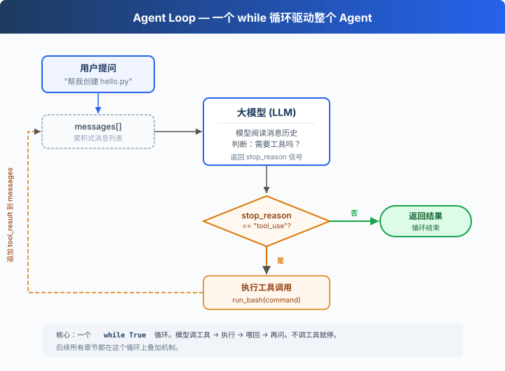
一个 while True
循环，模型调用工具就继续，不调用就停。整个过程只有两个信号：
| 信号 | 含义 | 循环动作 |
|---|---|---|
stop_reason == "tool_use" |
模型举手说"我要用工具" | 执行 → 结果喂回去 → 继续 |
stop_reason != "tool_use" |
模型说"我做完了" | 退出循环 |
工作原理
将这个过程翻译成代码。分步来看：
第 1 步：把用户的问题作为第一条消息。
代码
messages = [{"role": "user", "content": query}]第 2 步：将消息和工具定义一起发给 LLM。
代码
response = client.messages.create(
model=MODEL, system=SYSTEM, messages=messages,
tools=TOOLS, max_tokens=8000,
)第 3 步：追加模型回答，检查它是否调了工具。没调 → 结束。
代码
messages.append({"role": "assistant", "content": response.content})
if response.stop_reason != "tool_use":
return第 4 步：执行模型要求的工具，收集结果。
代码
results = []
for block in response.content:
if block.type == "tool_use":
output = run_bash(block.input["command"])
results.append({
"type": "tool_result",
"tool_use_id": block.id,
"content": output,
})第 5 步：把工具结果作为新消息追加，回到第 2 步。
代码
messages.append({"role": "user", "content": results})组装为一个完整函数：
代码
def agent_loop(messages):
while True:
response = client.messages.create(
model=MODEL, system=SYSTEM, messages=messages,
tools=TOOLS, max_tokens=8000,
)
messages.append({"role": "assistant", "content": response.content})
if response.stop_reason != "tool_use":
return
results = []
for block in response.content:
if block.type == "tool_use":
output = run_bash(block.input["command"])
results.append({
"type": "tool_result",
"tool_use_id": block.id,
"content": output,
})
messages.append({"role": "user", "content": results})不到 30 行，这就是最小可运行的 agent harness 内核。它不是智能本身，而是让模型能持续行动的最小运行框架，模型负责决策（要不要调工具、调哪个），harness 负责执行（调了就跑、结果喂回去）。后面 18 个章节都在这个循环上叠加机制，循环本身始终不变。
接下来
现在模型手里只有 bash 一个工具，读文件要 cat，写文件要
echo ... >，找个文件要
find，又丑又容易出错。
02 Tool Use → 给它 5 个真正的工具，会发生什么？模型会不会一次调用多个工具？几个工具同时跑会不会互相踩？
深入 CC 源码
以下内容基于 CC 源码
src/query.ts（1729 行）的核查。核心差异就两个：CC 不看stop_reason字段而是检查内容里有没有 tool_use 块（因为流式响应中 stop_reason 不可靠）；CC 有更多的退出路径和恢复策略做生产级保护。
教学版的 30 行 while True 就是 CC 1729
行的核心。 下面每一项都是在这个核心上叠加的保护机制。
一、循环结构差异
教学版检查 response.stop_reason。CC
不把它作为循环继续的唯一依据——流式响应中 stop_reason
可能还没更新但内容里已经有 tool_use 块了。CC 用
needsFollowUp
标志：接收到流式消息时（query.ts:830-834），只要检测到
tool_use 块就设为
true；QueryEngine.ts 会从
message_delta 捕获真实 stop_reason
用于其他逻辑，但 query loop 本身靠 needsFollowUp
决定是否继续。
代码
// query.ts:554-558
// stop_reason === 'tool_use' is unreliable.
// Set during streaming whenever a tool_use block arrives.
let needsFollowUp = false二、State 对象 10 字段（教学版只用 messages）
| # | 字段 | 用途 | 对应章节 |
|---|---|---|---|
| 1 | messages |
当前迭代的消息数组 | 01 |
| 2 | toolUseContext |
工具、信号、权限上下文 | 02 |
| 3 | autoCompactTracking |
压缩状态追踪 | 08 |
| 4 | maxOutputTokensRecoveryCount |
token 恢复尝试次数（上限 3） | 11 |
| 5 | hasAttemptedReactiveCompact |
本轮是否已尝试响应式压缩 | 08 |
| 6 | maxOutputTokensOverride |
8K→64K 的升级覆盖 | 11 |
| 7 | pendingToolUseSummary |
后台 Haiku 生成的 tool use 摘要 | 08 |
| 8 | stopHookActive |
停止钩子是否产生阻塞错误 | 04 |
| 9 | turnCount |
轮次计数（maxTurns 检查） | 01 |
| 10 | transition |
上一次继续原因 | 11 |
注：
taskBudgetRemaining（query.ts:291）是 loop-local 局部变量，不在 State 上。源码注释明确写了 "Loop-local (not on State)"。
三、多条退出和继续路径
教学版只有 1 条退出路径（模型不调工具就结束）。生产版有多条退出和继续路径，覆盖 blocking limit、prompt too long、model error、abort、hook stop、max turns、token budget continuation、reactive compact retry 等场景。每种场景都有对应的恢复或退出策略。
四、流式工具执行和 QueryEngine
CC 的
StreamingToolExecutor（query.ts:561）让工具在模型还在生成时就开始并行执行（根据工具是否
concurrency-safe 决定并发或独占）。QueryEngine.ts
额外加了费用超限、结构化输出验证失败等保护。教学版不实现这些——目标是概念清晰，不是性能极致。
一句话：1729 行的 query.ts 核心就是 30 行
while True。所有复杂字段和退出路径都是保护机制。先理解核心循环，后面的一切自然展开。
02: Tool Use — 多加一个工具，只加一行
"加一个工具, 只加一个 handler" — 循环不用动, 新工具注册进 dispatch map 就行。
Harness 层: 工具分发 — 扩展模型能触达的边界。
只有 bash 一个工具
01 的 Agent 只有一个 bash 工具。读文件要 cat，写文件要
echo "..." > file.py，改文件要 sed。
模型想的是"读这个文件"，却要拼出
cat path/to/file。多了一层翻译，浪费
token，还容易拼错。
全局视角：工具分发
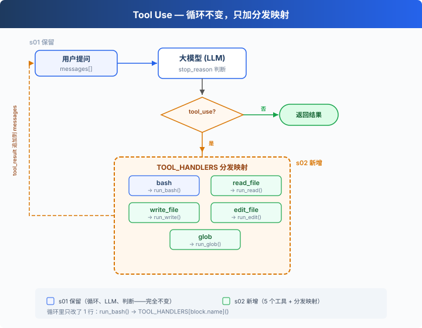
01 的循环完全保留（LLM 调用、stop_reason
判断、消息追加）。唯一的变动在工具执行那 1 行：run_bash()
替换为 TOOL_HANDLERS[block.name]() 查表分发。
给 Agent 加一个工具只需要做两件事：
- 定义工具：在
TOOLS数组里加一条描述 - 注册处理函数：在
TOOL_HANDLERS字典里加一个映射
从 1 个工具到 5 个工具
01 只有一个 bash：
代码
TOOLS = [{"name": "bash", ...}]
def run_bash(command): ...02 加到 5 个，每个工具都是独立定义：
代码
TOOLS = [
{"name": "bash", "description": "Run a shell command.", ...},
{"name": "read_file", "description": "Read file contents.", ...},
{"name": "write_file", "description": "Write content to file.", ...},
{"name": "edit_file", "description": "Replace text in file once.", ...},
{"name": "glob", "description": "Find files by pattern.", ...},
]每个工具有自己的实现函数：
代码
def run_read(path, limit=None):
lines = safe_path(path).read_text().splitlines()
if limit:
lines = lines[:limit]
return "\n".join(lines)
def run_write(path, content):
safe_path(path).write_text(content)
return f"Wrote {len(content)} bytes to {path}"
def run_edit(path, old_text, new_text):
text = safe_path(path).read_text()
if old_text not in text:
return "Error: text not found"
safe_path(path).write_text(text.replace(old_text, new_text, 1))
return f"Edited {path}"
def run_glob(pattern):
import glob as g
return "\n".join(g.glob(pattern, root_dir=WORKDIR))工具分发
代码
TOOL_HANDLERS = {
"bash": run_bash,
"read_file": run_read,
"write_file": run_write,
"edit_file": run_edit,
"glob": run_glob,
}
# 循环里只改了一行——从硬编码 run_bash 变成查表：
for block in response.content:
if block.type == "tool_use":
handler = TOOL_HANDLERS[block.name] # 查表
output = handler(**block.input) # 调用
results.append(...)加一个工具 = 在 TOOLS 数组加一条 + 在
TOOL_HANDLERS 字典加一行。循环不变。
多个工具调用
模型经常一次返回多个 tool_use："读一下 a.py 和 b.py，然后列出所有 .py 文件"。
教学版按 response.content 原始顺序逐个执行。CC
的做法更复杂：按原始顺序切成连续 batch，batch
内并发安全的工具并行执行，batch 间严格顺序（见附录）。
速查
| 概念 | 一句话 |
|---|---|
| TOOL_HANDLERS | 工具名 → 处理函数的字典。加工具 = 加一行映射 |
| 工具定义 | 告诉模型"我能做什么"的 JSON schema |
| 多工具调用 | 模型可一次返回多个 tool_use，教学版按原始顺序逐个执行 |
| 循环不变 | 01 的 while True 循环一行都没改 |
相对 01 的变更
| 组件 | 之前 (01) | 之后 (02) |
|---|---|---|
| 工具数量 | 1 (bash) | 5 (+read, write, edit, glob) |
| 工具执行 | 硬编码 run_bash() |
TOOL_HANDLERS 查表分发 |
| 路径安全 | 无 | safe_path 校验（仅 file tools） |
| 循环 | while True + stop_reason |
与 01 完全一致 |
接下来
现在 Agent 有 5 个专用工具。file tools 受 safe_path
保护，但 bash 不受限制，rm -rf / 还是能跑。
03 Permission → 在工具执行之前加一道门：这个操作安全吗？需要用户批准吗？
深入 CC 源码
以下基于 CC 源码
Tool.ts、tools.ts、toolOrchestration.ts、toolExecution.ts、StreamingToolExecutor.ts的核查。
一、工具定义方式
教学版：TOOLS 数组 +
TOOL_HANDLERS 字典。定义和实现分开。
CC：每个工具是 buildTool()
创建的独立对象，包含
schema、验证、权限、执行。getAllBaseTools()
汇总所有工具。
教学版的分离方式对教学更清晰——读者一眼看到"加一个工具 = 两条定义"。
二、并发安全判断：isConcurrencySafe()
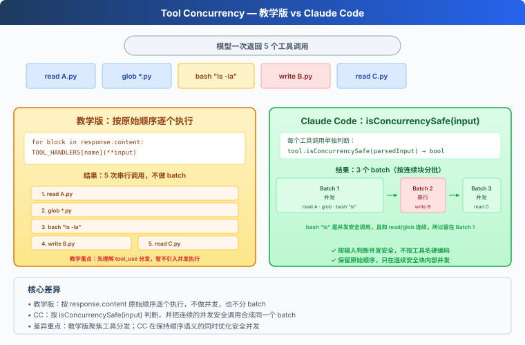
教学版按原始顺序逐个执行，不做并发。CC 用
isConcurrencySafe(input)
判断能否并发——注意这不是简单的"只读 vs 写"，而是按具体输入判断：
| isReadOnly | isConcurrencySafe | |
|---|---|---|
| FileRead | true | true |
| Glob | true | true |
Bash ls |
true | true ← 关键差异 |
Bash rm |
false | false |
| TaskCreate | false | true ← 改状态但可并发（TaskCreate 在 12 介绍） |
CC 的 Bash tool 的 isConcurrencySafe 等于
isReadOnly——只读命令可并发，写命令不可。TaskCreate
虽然改了任务文件，但每次都写不同的文件，所以可以并发。
三、分区算法
CC 的
partitionToolCalls()（toolOrchestration.ts:91-115）不是分两组，而是把工具调用按连续块分批：
代码
[read A, read B, glob *.py, bash "rm x", read C]
→ batch1(并发): [read A, read B, glob *.py]
→ batch2(串行): [bash "rm x"]
→ batch3(并发): [read C]并发安全的连续块编入同一个 batch，batch
内真正并发执行（toolOrchestration.ts:152-176，有并发上限）。遇到非并发安全的就开新
batch 串行执行。batch 之间严格顺序。
四、验证管线
CC 的每个工具调用经过严格的 5
步验证（toolExecution.ts）：
- Zod schema 验证（
614-680，教学版用 JSON Schema 替代）：参数类型/结构检查 - 工具级
validateInput()（
682-733）：参数值验证（如路径是否在工作区内） - PreToolUse hooks（
800-862，04 详细介绍）：钩子可以返回消息、修改输入、阻止执行 - 权限检查（
921-931，03 的核心内容）：canUseTool + checkPermissions → allow/deny/ask - 执行 tool.call()（
1207-1222）
教学版省略了 Zod（用 JSON Schema）、省略了 validateInput（用安全函数）、保留了权限检查和钩子概念。
五、流式工具执行
CC 的
StreamingToolExecutor（StreamingToolExecutor.ts）让工具在模型还在生成时就启动——不等模型说完。read_file
可能在模型还在输出"我来分析"的时候就跑完了。教学版不实现这个，目标和 01
一致——概念清晰，不追求性能极致。
六、工具结果持久化
每个工具有一个 maxResultSizeChars
字段。结果超过这个值就落盘，模型看到的是预览 + 文件路径。FileRead
特殊——设为
Infinity，防止读文件的输出又被当成文件落盘。具体来说，如果
FileRead 的结果超过阈值被落盘，模型下次读那个落盘文件时又会触发落盘 →
无限循环（读文件 → 落盘 → 再读 → 再落盘 → ...）。
03: Permission — 执行前做权限判断
"工具执行前先做权限判断" — 权限管线决定哪些操作需要审批。
Harness 层: 权限 — 在工具执行前加一道门。
问题
02 的 Agent 有 5 个工具。file tools 受 safe_path
保护，但 bash 不受限制。让它"清理一下项目"，可能执行
rm -rf /。
安全不能靠信任模型，要靠代码——在工具执行之前做判断。
解决方案
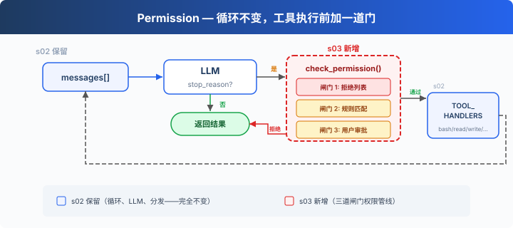
02 的循环完全保留。唯一的变动在工具执行前插入
check_permission()——每个工具调用经过三道闸门，顺序固定：硬拒绝优先，软询问次之，都没命中就放行。
三道闸门对应三种决策：
| 闸门 | 作用 | 命中后 |
|---|---|---|
| 1. 拒绝列表 | 永远禁止的操作（rm -rf /、sudo） |
直接拒绝，不执行 |
| 2. 规则匹配 | 取决于上下文的操作（写工作区外、rm 文件） |
交给闸门 3 |
| 3. 用户审批 | 闸门 2 命中后，暂停等用户确认 | 用户决定允许或拒绝 |
三道都没命中 → 直接执行。大部分日常操作走这条路。
工作原理
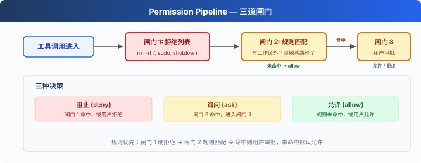
闸门 1：一张硬拒绝表，先查，命中就返回阻止信息。（教学示意：简单字符串匹配不是可靠安全机制，命令变体和 shell 展开可能绕过。CC 的做法见附录。）
代码
DENY_LIST = [
"rm -rf /", "sudo", "shutdown", "reboot",
"mkfs", "dd if=", "> /dev/sda",
]
def check_deny_list(command: str) -> str | None:
for pattern in DENY_LIST:
if pattern in command:
return f"Blocked: '{pattern}' is on the deny list"
return None闸门 2：规则匹配——描述"什么时候需要问用户"。每条规则指定工具和检查条件。
代码
PERMISSION_RULES = [
{
"tools": ["write_file", "edit_file"],
"check": lambda args: not (WORKDIR / args.get("path", "")).resolve().is_relative_to(WORKDIR),
"message": "Writing outside workspace",
},
{
"tools": ["bash"],
"check": lambda args: any(kw in args.get("command", "") for kw in ["rm ", "> /etc/", "chmod 777"]),
"message": "Potentially destructive command",
},
]
def check_rules(tool_name: str, args: dict) -> str | None:
for rule in PERMISSION_RULES:
if tool_name in rule["tools"] and rule["check"](args):
return rule["message"]
return None闸门 3：规则命中后，暂停等用户输入。
代码
def ask_user(tool_name: str, args: dict, reason: str) -> str:
print(f"\n⚠ {reason}")
print(f" Tool: {tool_name}({args})")
choice = input(" Allow? [y/N] ").strip().lower()
return "allow" if choice in ("y", "yes") else "deny"三道闸门串在一起，插在工具执行之前：
代码
def check_permission(block) -> bool:
# 闸门 1: 硬拒绝
if block.name == "bash":
reason = check_deny_list(block.input.get("command", ""))
if reason:
print(f"\n⛔ {reason}")
return False
# 闸门 2 + 3: 规则匹配 → 用户审批
reason = check_rules(block.name, block.input)
if reason:
decision = ask_user(block.name, block.input, reason)
if decision == "deny":
return False
return True
# 在 agent_loop 中——s02 的循环只加了一行：
for block in response.content:
if block.type == "tool_use":
if not check_permission(block): # ← 新增
results.append({... "content": "Permission denied."})
continue
output = TOOL_HANDLERS[block.name](**block.input) # s02 原有
results.append(...)相对 02 的变更
| 组件 | 之前 (02) | 之后 (03) |
|---|---|---|
| 安全模型 | 无（信任模型） | 三道闸门权限管线 |
| 新函数 | — | check_deny_list, check_rules, ask_user, check_permission |
| 循环 | 直接执行所有工具 | 执行前插入 check_permission() |
接下来
权限检查做了——但每次都在循环里硬编码
check_permission()。如果我想在每次工具执行前后加日志？如果想在某些操作后自动触发
git commit？这些扩展逻辑散落在 loop 里，循环很快就会膨胀。
04 Hooks → 给循环加钩子，扩展逻辑挂在钩子上，循环保持干净。
深入 CC 源码
以下基于 CC 源码
types/permissions.ts、utils/permissions/permissions.ts、toolExecution.ts、utils/permissions/yoloClassifier.ts、tools/AgentTool/forkSubagent.ts的核查。
一、PermissionResult：不是 3 种，是 4 种
教学版的三道闸门（deny → ask → allow）和 CC 不完全对应。CC 的
PermissionResult 有 4 个
behavior（types/permissions.ts:241-266）：
| behavior | 含义 | 教学版对应 |
|---|---|---|
allow |
直接允许 | 闸门 3 通过 |
deny |
直接拒绝 | 闸门 1 命中 |
ask |
弹出对话框问用户 | 闸门 2 命中 |
passthrough |
工具不表态，交给通用管线决定 | 教学版无 |
二、生产版的验证阶段
CC 的工具调用不是经过三道闸门，而是经过多个阶段，分布在
checkPermissionsAndCallTool()（toolExecution.ts:599-1745）、hooks、hasPermissionsToUseToolInner()（utils/permissions/permissions.ts:1158-1310）和
classifier 逻辑里：
- Zod schema
验证（
toolExecution.ts:614-680）— 参数类型检查 - validateInput()（
toolExecution.ts:682-733）— 工具级语义验证 - backfillObservableInput()（
toolExecution.ts:784）— 补全遗留字段 - PreToolUse
hooks（
toolExecution.ts:800-862）— 钩子可以返回 allow/deny/ask - resolveHookPermissionDecision()（
toolExecution.ts:921-931）— 协调钩子+管线决策 - hasPermissionsToUseToolInner()（
permissions.ts:1158-1310）— 多层规则检查：- 整个工具被 deny rule 禁用 →
deny - 整个工具被 ask rule 标记 →
ask tool.checkPermissions()工具自己的判断- 工具自己返回 deny →
deny requiresUserInteraction()→ask- 内容相关的 ask 规则 →
ask（不可绕过） - 安全检查违规 →
ask（不可绕过） - bypassPermissions 模式 →
allow - 整个工具被 allow rule 放行 →
allow - passthrough → 转为
ask
- 整个工具被 deny rule 禁用 →
三、拒绝列表：不是一个文件，是 8 个来源
CC 没有单一的 deny list。权限规则来自 8
个来源（types/permissions.ts:54-62）：
| 来源 | 配置位置 |
|---|---|
userSettings |
~/.claude/settings.json |
projectSettings |
.claude/settings.json |
localSettings |
settings.local.json |
flagSettings |
Feature flags |
policySettings |
企业管理策略 |
cliArg |
--allowedTools / --deniedTools |
command |
内联命令 |
session |
会话内临时授权 |
每条规则格式：{ toolName: "Bash", ruleBehavior: "deny", ruleContent: "npm publish:*" }。多个来源的规则合并，高优先级来源覆盖低优先级（从低到高：user
< project < local < flag < policy，加上
cliArg、command、session）。
四、isDestructive() 是什么
CC 中
isDestructive（Tool.ts:405-406）纯粹是
UI 展示用的——在工具列表里显示 [destructive]
标签。它不参与权限决策。默认所有工具都返回 false。只有
ExitWorktree（remove 时）和 MCP 工具（依赖
annotations.destructiveHint）覆写了它。
五、YoloClassifier（自动审批）
CC 的 auto
模式下，不会每次都弹对话框。classifyYoloAction（utils/permissions/yoloClassifier.ts:1012）把工具调用
+ 对话上下文发给一个分类器 LLM 判断是否安全。先尝试 acceptEdits
模式模拟（permissions.ts:620-656，如果 acceptEdits 允许 →
直接批准），再查安全工具白名单（permissions.ts:658-686），最后才调分类器。分类器连续拒绝太多次
→ 回退到人工审批。
六、权限冒泡
子 Agent（通过 AgentTool fork 出来的）的 permissionMode
设为
'bubble'（forkSubagent.ts:50）。意思是权限弹窗冒泡到父
Agent 的终端，而不是在子 Agent 里静默拒绝。Bash
分类器在这个过程中继续跑——给权限对话框显示的同时在后台判断是否可以自动批准。
教学版的简化是刻意的
- 多阶段管线 → 3 道闸门：理解门槛大幅降低
- 8 个规则来源 → 1 个本地 DENY_LIST：概念量可控
- isDestructive → 忽略（教学版没有 UI 层，CC 里它也不参与权限决策）
- YoloClassifier → 省略（依赖于额外的 LLM 调用和遥测系统）
- 权限冒泡 → 省略（15 才涉及多 Agent）
04: Hooks — 挂在循环上，不写进循环里
"挂在循环上, 不写进循环里" — hook 在工具执行前后注入扩展逻辑。
Harness 层: hook — 扩展点不侵入循环。
问题
03 的 Agent 有权限检查了。但每次加一个新检查，比如"记录每次 bash
调用"、"操作后自动 git add"，都要修改 agent_loop 函数。
循环很快就变成了这样：
代码
def agent_loop(messages):
while True:
# ... LLM call ...
for block in response.content:
if block.type == "tool_use":
log_to_file(block) # 加一行
check_permission(block) # 加一行
notify_slack(block) # 又加一行
output = execute(block)
auto_git_add(block) # 再加一行
# ... 很快循环就认不出来了你想扩展的是 Agent 的行为，但你改的却是循环本身。循环应该是一个稳定的核心，扩展应该挂在外面。
解决方案
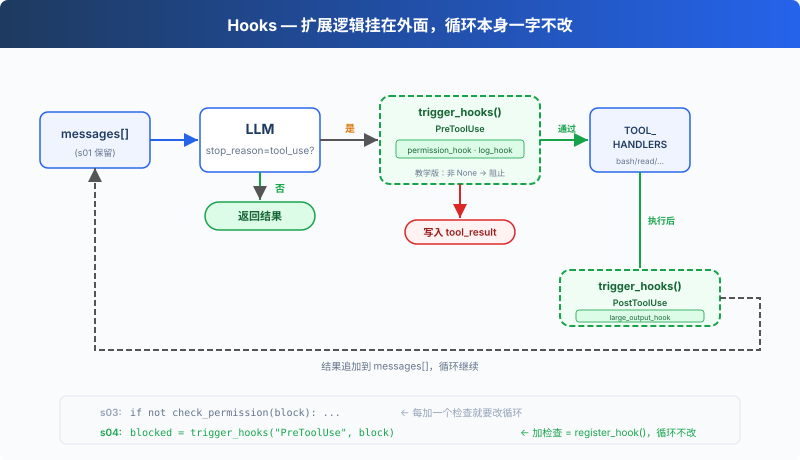
03 的循环和权限逻辑完全保留。唯一的变动是把
check_permission() 从循环体内移到了 hook
上，循环不再直接调用任何检查函数，改为
trigger_hooks("PreToolUse", block)，由注册表决定跑什么。
四个事件，覆盖一个完整的 agent cycle：
| 事件 | 触发时机 | 典型用途 |
|---|---|---|
| UserPromptSubmit | 用户输入提交后、进入 LLM 前 | 输入验证、注入上下文 |
| PreToolUse | 工具执行前 | 权限检查、日志记录 |
| PostToolUse | 工具执行后 | 副作用（自动 git add 等）、输出检查 |
| Stop | 循环即将退出时 | 收尾清理（CC 还支持强制续跑） |
扩展通过 register_hook() 添加，循环只调用
trigger_hooks()。
工作原理
hook 注册表：一个字典，事件名映射到回调列表。
代码
HOOKS = {
"UserPromptSubmit": [],
"PreToolUse": [],
"PostToolUse": [],
"Stop": [],
}
def register_hook(event: str, callback):
HOOKS[event].append(callback)
def trigger_hooks(event: str, *args):
for callback in HOOKS[event]:
result = callback(*args)
if result is not None: # 返回值 ≠ None → hook 说"停"
return result
return None教学版中，PreToolUse 的非 None 返回值会阻止本次工具执行，Stop 的非 None 返回值会强制续跑。UserPromptSubmit 和 PostToolUse 的返回值未被使用。
UserPromptSubmit，用户输入提交后、进入 LLM 前触发。CC 中可以拦截或修改输入，教学版只做日志演示：
代码
def context_inject_hook(query: str) -> str | None:
"""Inject current working directory info into every prompt."""
print(f"\033[90m[HOOK] UserPromptSubmit: working in {WORKDIR}\033[0m")
return None # return None = no modification, let prompt through
register_hook("UserPromptSubmit", context_inject_hook)在主循环中，用户输入后立即触发：
代码
query = input("s04 >> ")
trigger_hooks("UserPromptSubmit", query) # ← 进入 LLM 之前
history.append({"role": "user", "content": query})
agent_loop(history)PreToolUse / PostToolUse，工具执行前后的 hook。03 的权限检查逻辑现在包装成 PreToolUse hook，再加一个日志 hook 和一个大输出提醒：
代码
# PreToolUse: 权限检查（s03 的逻辑，从循环移到 hook）
def permission_hook(block):
if block.name == "bash":
for pattern in DENY_LIST:
if pattern in block.input.get("command", ""):
return "Permission denied by deny list"
if block.name in ("write_file", "edit_file"):
path = block.input.get("path", "")
if not (WORKDIR / path).resolve().is_relative_to(WORKDIR):
choice = input(" Allow? [y/N] ").strip().lower()
if choice not in ("y", "yes"):
return "Permission denied by user"
return None
# PreToolUse: 日志
def log_hook(block):
print(f"[HOOK] {block.name}(...)")
# PostToolUse: 大文件提醒
def large_output_hook(block, output):
if len(str(output)) > 100000:
print(f"[HOOK] ⚠ Large output from {block.name}")
register_hook("PreToolUse", permission_hook)
register_hook("PreToolUse", log_hook)
register_hook("PostToolUse", large_output_hook)Stop，循环即将退出时触发（stop_reason != "tool_use"）。教学版用于打印收尾统计：
代码
def summary_hook(messages: list) -> str | None:
"""Print a summary when the loop is about to stop."""
tool_count = sum(1 for m in messages
for b in (m.get("content") if isinstance(m.get("content"), list) else [])
if isinstance(b, dict) and b.get("type") == "tool_result")
print(f"\033[90m[HOOK] Stop: session used {tool_count} tool calls\033[0m")
return None # return None = allow stop, return string = force continuation
register_hook("Stop", summary_hook)在 agent_loop 中，退出前触发：
代码
if response.stop_reason != "tool_use":
force = trigger_hooks("Stop", messages) # ← 退出之前
if force:
# hook returned a message → inject it and continue
messages.append({"role": "user", "content": force})
continue
return循环里只改了一处：03 直接调用
check_permission(block)，04 改为
trigger_hooks("PreToolUse", block)：
代码
for block in response.content:
if block.type != "tool_use":
continue
# s03: if not check_permission(block): ...
# s04: hook 替代硬编码
blocked = trigger_hooks("PreToolUse", block)
if blocked:
results.append({"type": "tool_result", "tool_use_id": block.id,
"content": str(blocked)})
continue
handler = TOOL_HANDLERS.get(block.name)
output = handler(**block.input) if handler else f"Unknown: {block.name}"
trigger_hooks("PostToolUse", block, output)
results.append({"type": "tool_result", "tool_use_id": block.id,
"content": output})四个 hook 覆盖了 agent cycle 的关键节点：输入→执行前→执行后→退出。循环只负责调用 trigger_hooks()，具体逻辑全在 hook 回调里。
相对 03 的变更
| 组件 | 之前 (03) | 之后 (04) |
|---|---|---|
| 扩展方式 | check_permission() 硬编码在循环里 | HOOKS 注册表 + trigger_hooks() |
| 新函数 | — | register_hook, trigger_hooks |
| hook 回调 | — | context_inject_hook, permission_hook, log_hook, large_output_hook, summary_hook |
| 循环 | 直接调用 check_permission() | 调用 trigger_hooks("PreToolUse", ...) |
| 退出控制 | 无 | trigger_hooks("Stop", ...) 可阻止退出 |
| 输入拦截 | 无 | trigger_hooks("UserPromptSubmit", ...) 可注入上下文 |
接下来
Agent 现在能安全执行操作了。但它有没有停下来想过"我应该先做什么，再做什么"？给它一个复杂任务，它是一上来就动手，还是先列个计划？
05 TodoWrite → 给 Agent 一个计划工具。先列清单，再做。
深入 CC 源码
以下基于 CC 源码
toolHooks.ts（650 行）、hooks.ts、stopHooks.ts、coreTypes.ts的完整分析。
一、Hook 事件：不止这 4 个，而是 27 个
教学版只讲了 PreToolUse 和 PostToolUse。CC 实际有 27 个 hook
事件（coreTypes.ts:25-53）：
| 类别 | 事件 |
|---|---|
| 工具相关 | PreToolUse, PostToolUse,
PostToolUseFailure |
| 会话相关 | SessionStart, SessionEnd,
Stop, StopFailure, Setup |
| 用户交互 | UserPromptSubmit, Notification,
PermissionRequest, PermissionDenied |
| 子 Agent | SubagentStart, SubagentStop |
| 压缩相关 | PreCompact, PostCompact |
| 团队相关 | TeammateIdle, TaskCreated,
TaskCompleted |
| 其他 | Elicitation, ElicitationResult,
ConfigChange, WorktreeCreate,
WorktreeRemove, InstructionsLoaded,
CwdChanged, FileChanged |
教学版只讲 4 个核心事件（UserPromptSubmit、PreToolUse、PostToolUse、Stop），因为它们覆盖了一个完整 agent cycle 的关键节点。其他 23 个都是同样的模式。
二、HookResult 常用字段摘录
CC 的
HookResult（types/hooks.ts:260-275）有 14
个字段，以下是常用字段：
| 字段 | 类型 | 用途 |
|---|---|---|
message |
Message | 可选 UI 消息 |
blockingError |
HookBlockingError | 阻塞错误 → 注入对话让模型自纠 |
outcome |
success/blocking/non_blocking_error/cancelled | 执行结果 |
preventContinuation |
boolean | 阻止后续执行 |
stopReason |
string | 停止原因描述 |
permissionBehavior |
allow/deny/ask/passthrough | hook 返回权限决策 |
updatedInput |
Record | 修改工具输入 |
additionalContext |
string | 附加上下文 |
updatedMCPToolOutput |
unknown | MCP 工具输出修改 |
三、关键不变式：Hook 'allow' 不能绕过 deny/ask 规则
这是 CC
权限系统最重要的安全设计（toolHooks.ts:325-331）：hook
返回 allow 时，仍然要检查 settings.json 的 deny/ask
规则。即使用户的 hook 脚本说"允许"，如果在 settings.json
中禁用了这个工具，操作仍然会被阻止。
教学版没有这个层次，只把 PreToolUse 的非 None 返回值解释为阻止本次工具执行。这在教学场景中够了，但在生产环境中会形成安全漏洞。
四、stopHookActive 机制
CC 的 Stop hooks
有一个防无限循环机制（query.ts:212,1300）：stopHookActive
状态字段。当 stop hooks 产生 blockingError 时，循环带
stopHookActive: true 重入下一轮。后续迭代中 stop hooks
看到这个标志就不会再次触发。这防止了一个永不停机的 bug：模型自纠后 stop
hook 再次报错 → 模型再自纠 → stop hook 再报错...
五、hook_stopped_continuation
PostToolUse hooks 返回 preventContinuation: true
时，会产生一个 hook_stopped_continuation
附件（toolHooks.ts:117-130）。query.ts（L1388-1393）检测到后设置
shouldPreventContinuation = true，循环退出。这是 "hook
优雅地让 Agent 停机" 的机制，不是崩溃，是完成。
教学版的简化是刻意的
- 27 个事件 → 4 个（UserPromptSubmit/PreToolUse/PostToolUse/Stop）：覆盖 agent cycle 关键节点
- 14 个字段 → 简单的返回值（None = 继续，非 None = 阻止/续跑）：心智负担降到最低
- Hook allow vs deny/ask 不变式 → 省略：教学版没有 settings.json 层
- stopHookActive → 省略：教学版 Stop hook 只做简单续跑，不涉及防无限循环机制
05: TodoWrite — 没有计划的 Agent，做着做着就偏了
"没有计划的 agent 走哪算哪" — 先列步骤再动手，长任务更不容易漏项。
Harness 层: 规划 — 让 Agent 在动手之前先想清楚。
问题
给 Agent 一个复杂任务："把所有 Python 文件改成 snake_case 命名，然后跑测试，修好失败。"
Agent 开始干活，改了 3 个文件，跑了个测试，发现 2 个失败，开始修。修着修着，它忘了最初是"改成 snake_case"，测试失败把注意力全吸走了。
对话越长越严重：工具结果不断填满上下文，系统提示的影响力被稀释。一个 10 步重构，做完 1-3 步就开始即兴发挥，因为 4-10 步已经被挤出注意力了。
解决方案
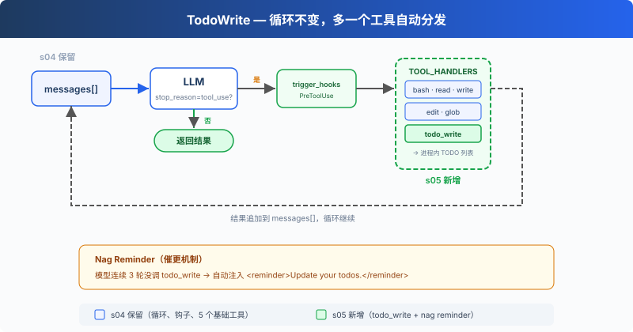
保留上一章的最小 hook 结构，重点看新增的 todo_write
工具和 reminder 机制。todo_write
本身不做任何实际工作，不能读文件、不能跑命令，只是让 Agent
在动手之前先理清思路。
dispatch 机制不变，新工具仍然走
TOOL_HANDLERS[block.name] 分发。但为了演示 todo
reminder，循环里加了一个计数器：连续 3 轮没调 todo_write
就注入一条提醒。
工作原理
todo_write 工具，接收一个带状态的列表，保存在当前进程内存中，同时在终端显示进度：
代码
CURRENT_TODOS: list[dict] = []
def run_todo_write(todos: list) -> str:
global CURRENT_TODOS
CURRENT_TODOS = todos
lines = ["\n## Current Tasks"]
for t in CURRENT_TODOS:
icon = {"pending": " ", "in_progress": "▸", "completed": "✓"}[t["status"]]
lines.append(f" [{icon}] {t['content']}")
print("\n".join(lines))
return f"Updated {len(CURRENT_TODOS)} tasks"工具定义和其他 5 个工具一起加入 dispatch map：
代码
TOOLS = [
{"name": "bash", ...},
{"name": "read_file", ...},
{"name": "write_file", ...},
{"name": "edit_file", ...},
{"name": "glob", ...},
# s05: 新增一条
{"name": "todo_write", "description": "Create and manage a task list ...",
"input_schema": {
"type": "object",
"properties": {
"todos": {
"type": "array",
"items": {
"type": "object",
"properties": {
"content": {"type": "string"},
"status": {"type": "string", "enum": ["pending", "in_progress", "completed"]},
},
},
},
},
},
},
]
TOOL_HANDLERS["todo_write"] = run_todo_writeNag reminder，模型连续 3 轮没调
todo_write 时，自动注入一条提醒（教学版机制，CC
源码中没有这个固定轮数逻辑）：
代码
if rounds_since_todo >= 3 and messages:
messages.append({
"role": "user",
"content": "<reminder>Update your todos.</reminder>",
})
rounds_since_todo = 0Agent 收到任务后的典型流程：先调 todo_write
列出所有步骤（全 pending）→ 做一个步骤，改成
in_progress → 做完改成 completed → 看下一个
pending → 继续。连续 3 轮没有调用 todo_write
时，循环会在下一次 LLM 调用前追加一条 reminder。
关键洞察：todo_write 不给 Agent 增加任何执行能力。它增加的是规划能力。
相对 04 的变更
| 组件 | 之前 (04) | 之后 (05) |
|---|---|---|
| 工具数量 | 5 (bash, read, write, edit, glob) | 6 (+todo_write) |
| 规划能力 | 无 | 带状态的 TODO 列表 + nag reminder |
| SYSTEM 提示 | 通用提示 | 加入 "先计划再执行" 引导 |
| 循环 | 不变 | dispatch 不变，新增 rounds_since_todo 计数器和 reminder 注入 |
接下来
Agent 能计划了。但如果一个任务太大，比如"重构整个认证模块"，光靠 TODO 列表不够。这个任务本身就是几十个小任务的集合，放在同一个对话里会被上下文淹没。
06 Subagent → 把大任务拆成子任务，每个子任务派一个独立的 Agent。它们有自己的干净上下文，不会互相污染。
深入 CC 源码
CC 中有两套任务系统并存（tasks.ts:133-139）：
- TodoWrite（V1）：一个简单的列表工具，数据在内存
AppState
中维护（
TodoWriteTool.ts:65-103）。教学版也保存在进程内存里，退出后清空 - Task System（V2 = 12）：文件持久化、依赖图、并发锁、ownership
切换由 isTodoV2Enabled()
控制。当前源码的实现逻辑：交互式会话中 V2
默认启用，非交互式会话（SDK）中 V1 默认启用；设置
CLAUDE_CODE_ENABLE_TASKS 环境变量可强制启用
V2。注意源码注释 "Force-enable tasks in non-interactive mode" 描述的是
env var 路径的用途，和默认分支的返回值语义不同，阅读时需区分。
教学版省略了真实源码中的 activeForm
字段（utils/todo/types.ts:8-15）。CC 用它给 UI spinner
展示"正在做什么"，教学版只有终端输出，不需要这个字段。
教学版的 nag reminder（3 轮未更新就注入提醒）是教学机制。CC
源码中没有固定的"3 轮"逻辑，更接近的是
TodoWriteTool.ts:72-107 中当 3 个以上 todo 全部完成但没有
verification 项时，追加 verification nudge。
Task System 相比 TodoWrite 的核心增量：
- 文件持久化（Claude 配置目录下
tasks/{taskListId}/{taskId}.json）而非内存列表 blockedBy依赖图而非平铺列表proper-lockfile并发安全而非无锁- 四个独立工具（Create/Get/Update/List）而非一个
- TaskCreated / TaskCompleted
hooks（
TaskCreateTool.ts:80-129、TaskUpdateTool.ts:231-260）供外部系统集成
06: Subagent — 大任务拆小，每个拿到的都是干净上下文
"大任务拆小, 每个小任务干净的上下文" — Subagent 用独立 messages[], 不污染主对话。
Harness 层: 子 Agent — 上下文隔离, 注意力不漂移。
问题
Agent 在修一个 bug。它读了 30 个文件来追踪调用链，中间聊了 60 轮。messages 列表涨到 120 条，其中大部分是"追踪调用链"的中间过程，和"修 bug"这个最终目标无关。
这些中间过程占着上下文位置，让 Agent 越来越"健忘"，它记不住最初的问题是什么了。
换个角度：你修 bug 的时候，会"开一个新终端"来追踪调用链。追踪完了，终端关掉，结果写进笔记，回到原来的终端继续修 bug。Agent 也需要这个能力：开一个独立的子进程，给它一个独立的消息列表，让它专心做一件事。
解决方案
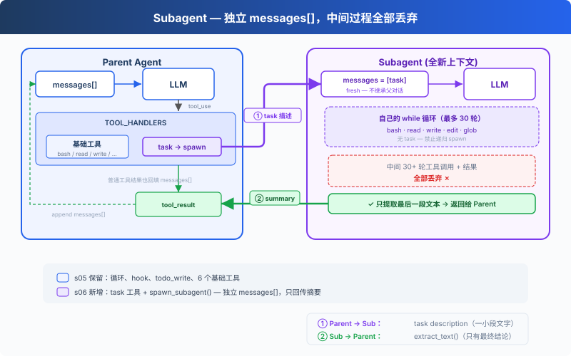
保留上一章的最小 hook 结构和 todo_write
工具，本章重点转向新增的 task 工具。调用它时，spawn 一个子
Agent，拥有全新的
messages[]，跑自己的循环，结束后只把摘要文本回传给主
Agent。对话上下文被丢弃，但文件系统的副作用（写文件、改文件、跑命令）保留在工作目录中。
子 Agent 的工具受限：有 bash/read/write/edit/glob，但没有 task，不能递归 spawn 新的子 Agent。子 Agent 的工具调用仍经过权限 hook，安全策略不因上下文隔离而跳过。
工作原理
spawn_subagent，给子 Agent 一个全新的 messages 列表，跑自己的循环，只回传结论：
代码
def spawn_subagent(description: str) -> str:
# 子 Agent 的工具：基础工具，但没有 task（禁止递归）
sub_tools = [
{"name": "bash", ...}, {"name": "read_file", ...},
{"name": "write_file", ...}, {"name": "edit_file", ...},
{"name": "glob", ...},
]
messages = [{"role": "user", "content": description}] # 全新 messages[]
for _ in range(30): # safety limit
response = client.messages.create(
model=MODEL, system=SUB_SYSTEM,
messages=messages, tools=sub_tools, max_tokens=8000,
)
messages.append({"role": "assistant", "content": response.content})
if response.stop_reason != "tool_use":
break
results = []
for block in response.content:
if block.type == "tool_use":
blocked = trigger_hooks("PreToolUse", block)
if blocked:
results.append({... "content": str(blocked)})
continue
handler = SUB_HANDLERS.get(block.name)
output = handler(**block.input) if handler else f"Unknown"
trigger_hooks("PostToolUse", block, output)
results.append({... "content": output})
messages.append({"role": "user", "content": results})
# 只返回最后的文本结论，中间过程全部丢弃
return extract_text(messages[-1]["content"])主 Agent 调用时，跟调其他工具一样：
代码
TOOLS = [
{"name": "bash", ...},
{"name": "read_file", ...},
{"name": "write_file", ...},
{"name": "edit_file", ...},
{"name": "glob", ...},
{"name": "todo_write", ...},
# s06: 新增 task 工具
{"name": "task",
"description": "Launch a subagent to handle a complex subtask. Returns only the final conclusion.",
"input_schema": {"type": "object", "properties": {"description": {"type": "string"}}, "required": ["description"]}},
]
TOOL_HANDLERS["task"] = spawn_subagent三个关键设计决策：
| 决策 | 选择 | 原因 |
|---|---|---|
| 上下文隔离 | 全新 messages[] |
子 Agent 的中间过程不污染主 Agent 的上下文 |
| 只回传结论 | extract_text(last_message) |
不是回传整个 messages 列表 |
| 禁止递归 | 子 Agent 无 task 工具 | 防止子 Agent 再 spawn 新的子 Agent |
| 安全策略不跳过 | 子 Agent 工具调用也走 PreToolUse hook | 上下文隔离不代表权限隔离 |
dispatch 机制不变，task 工具通过
TOOL_HANDLERS[block.name] 分发。子 Agent 有独立的
SUB_SYSTEM 提示，明确要求"直接完成任务，不要再委派"。
相对 05 的变更
| 组件 | 之前 (05) | 之后 (06) |
|---|---|---|
| 工具数量 | 6 (bash, read, write, edit, glob, todo_write) | 7 (+task) |
| 新函数 | — | spawn_subagent（独立 messages[] + 30 轮安全限制） |
| 上下文隔离 | 全部在主对话中 | 子 Agent 用全新的 messages[] |
| 循环 | 不变 | dispatch 不变，子 Agent 有独立 SUB_SYSTEM 和 hook 保护的循环 |
接下来
Agent 现在能拆任务了。但每个任务需要的知识不一样：改前端组件需要知道 React 规范，写 SQL 需要知道表结构。这些知识全塞进 system prompt，上下文直接爆了。
07 Skill Loading → 技能按需注入，不在 system prompt 里堆文档。用到的时候才加载，和读文件一样自然。
深入 CC 源码
以下基于 CC 源码
AgentTool.tsx、runAgent.ts、forkSubagent.ts、forkedAgent.ts的完整分析。
一、不是一种模式，是三种
教学版只讲了"全新的 messages[]"。CC 实际有三种执行模式：
| 模式 | 触发条件 | 上下文 |
|---|---|---|
| Normal Subagent | 指定了 subagent_type（normal path） |
全新 messages[]，只有 prompt |
| Fork Subagent | 没指定 subagent_type，fork gate 开启 |
通过 buildForkedMessages() 构造 cache-friendly
前缀，共享 prompt cache |
| General-Purpose | 没指定 subagent_type，fork gate 关闭 |
同 Normal |
二、Fork 模式：为了共享 Prompt Cache
这是教学版没有的核心概念。Fork
模式（forkSubagent.ts:60-71）不创建全新上下文，而是通过
buildForkedMessages()（forkSubagent.ts:107-168）构造
cache-friendly 消息前缀，保留父 assistant message 并生成 placeholder
tool results。目的不是隔离，而是让 Anthropic API 的 prompt cache
命中：父子 Agent 的 system prompt、tools、messages 前缀完全一致，API
端不需要重算。
缓存命中的五个关键组件（forkedAgent.ts:57-68）：system
prompt、tools、model、messages 前缀、thinking
config，必须字节级一致。
三、Context Isolation 的精确粒度
createSubagentContext()（forkedAgent.ts:345-462）创建子
Agent 的 ToolUseContext：
| 字段 | 行为 |
|---|---|
abortController |
新的 child controller，父 abort 向下传播 |
setAppState |
默认 no-op；但 sync agent 通过 shareSetAppState
共享（runAgent.ts:697-714） |
readFileState |
从父克隆（避免重复读相同文件） |
queryTracking |
新 chainId，depth = parentDepth + 1 |
子 Agent 不是完全隔离的：文件读取状态是共享的。UI 和通知的隔离程度取决于执行路径（sync/async/fork/teammate 各不同）。
四、递归 Fork 防护
教学版用"子 Agent 不给 task
工具"表达递归保护。真实实现更精细：isInForkChild()（forkSubagent.ts:78-89）检查对话历史中是否有
FORK_BOILERPLATE_TAG，有就拒绝。但
constants/tools.ts:36-46 中 Agent
工具默认在所有 agent 的禁用集合里，USER_TYPE === 'ant'
时例外；forkSubagent.ts:73-89 针对 fork child
有专门的递归保护；agentToolUtils.ts:100-110 在 teammate
场景下有特殊放行。不是简单的"禁止新的子 Agent"。
五、Permission Bubbling
Fork Agent 的
permissionMode: 'bubble'（forkSubagent.ts:67）意味着子
Agent 的权限弹窗冒泡到父终端，用户在主终端里审批子 Agent 的操作。
六、Async vs Sync
教学版只展示了同步子 Agent（父等着子跑完）。CC
还支持异步路径（AgentTool.tsx:686-764）：run_in_background: true
时异步启动，返回 { status: 'async_launched' } 立即给父
Agent，子 Agent 完成后通过通知机制告知父 Agent。实际触发条件不止
run_in_background，还有 auto-background、assistant force
async、coordinator/proactive 等路径。
教学版的简化是刻意的
- 三种模式 → 一种（fresh messages）：概念清晰
- Prompt cache 共享 → 省略：教学版不涉及 API 层优化
- 递归 fork 防护 → 简化为"子 Agent 无 task 工具"
- Async → 省略（留给 13）：06 先理解同步模型
07: Skill Loading — 用到的时候才加载
"用到时再加载, 别全塞 prompt 里" — 通过 tool_result 注入, 不塞 system prompt。
Harness 层: 知识 — 按需加载, 不堆满上下文。
问题
你的项目有一套 React 组件规范、一份 SQL 风格指南、一份 API 设计文档。你希望 Agent 自动遵守这些规范。最直接的想法，全塞进 system prompt：
代码
SYSTEM = (
f"You are a coding agent. "
+ open("docs/react-style.md").read() # 2000 行
+ open("docs/sql-style.md").read() # 1500 行
+ open("docs/api-design.md").read() # 3000 行
)6500 行 system prompt。Agent 每次调用 LLM 都带着这些文档——不管是在改 CSS 颜色还是修 SQL 查询。99% 的内容和当前任务无关，白白消耗 token。
解决方案
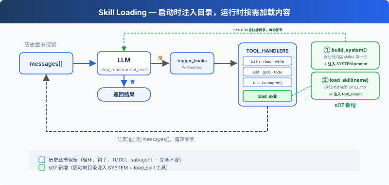
保留上一章的最小 hook 结构、todo_write 和子
Agent，本章重点转向新增的 load_skill
工具。启动时把技能目录注入 SYSTEM
prompt，运行时多注册一个工具加载完整内容，用到才花 token。
两层设计：
| 层 | 位置 | 时机 | 代价 |
|---|---|---|---|
| 1. 目录 | system prompt | 启动时注入（harness 扫描 skills/） | ~100 tokens/skill，每轮都带 |
| 2. 内容 | tool_result | Agent 调用 load_skill 时 | ~2000 tokens/skill，按需 |
dispatch 机制不变，load_skill 通过
TOOL_HANDLERS[block.name] 分发。
工作原理
skills/ 目录，每个技能一个子目录，包含
SKILL.md 文件：
代码
skills/
agent-builder/SKILL.md
code-review/SKILL.md
mcp-builder/SKILL.md
pdf/SKILL.md第一级：启动时注入目录：harness 启动时调用
_scan_skills() 扫描 skills/ 目录，解析每个 SKILL.md 的 YAML
frontmatter（name、description），存入
SKILL_REGISTRY 字典。list_skills()
从注册表生成目录，注入 SYSTEM prompt。Agent
每轮都能看到"我有哪些技能可用"，不花额外 API 调用：
代码
SKILL_REGISTRY: dict[str, dict] = {}
def _scan_skills():
if not SKILLS_DIR.exists():
return
for d in sorted(SKILLS_DIR.iterdir()):
if not d.is_dir():
continue
manifest = d / "SKILL.md"
if manifest.exists():
raw = manifest.read_text()
meta, body = _parse_frontmatter(raw)
name = meta.get("name", d.name)
desc = meta.get("description", raw.split("\n")[0].lstrip("#").strip())
SKILL_REGISTRY[name] = {"name": name, "description": desc, "content": raw}
_scan_skills() # runs once at startup
def list_skills() -> str:
return "\n".join(f"- **{s['name']}**: {s['description']}" for s in SKILL_REGISTRY.values())
def build_system() -> str:
catalog = list_skills()
return (
f"You are a coding agent at {WORKDIR}. "
f"Skills available:\n{catalog}\n"
"Use load_skill to get full details when needed."
)
SYSTEM = build_system()第二级：load_skill：Agent 决定"我需要 SQL
风格指南"，调用
load_skill("sql-style")。通过注册表查找，不走文件路径，没有路径遍历风险。内容通过
tool_result 注入：
代码
def load_skill(name: str) -> str:
skill = SKILL_REGISTRY.get(name)
if not skill:
return f"Skill not found: {name}"
return skill["content"]关键区别：技能内容不是 system prompt 的一部分，它作为一次工具结果进入当前 messages。后续调用会随历史一起携带，直到上下文压缩、截断或会话结束。这和 08 的 compact 自然衔接：按需加载解决了"不该提前带的不要带"，compact 解决"该丢的怎么丢"。
相对 06 的变更
| 组件 | 之前 (06) | 之后 (07) |
|---|---|---|
| 工具数量 | 7 (bash, read, write, edit, glob, todo_write, task) | 8 (+load_skill) |
| 知识加载 | 无 | 两级：启动时目录注入 SYSTEM + 运行时 load_skill |
| SYSTEM 提示 | 静态字符串 | 启动时扫描 skills/ 注入目录 |
| 技能注册表 | 无 | SKILL_REGISTRY（启动时填充，防路径遍历） |
| 循环 | 不变 | 不变（skill 工具自动分发） |
接下来
按需加载解决了"不该带的不要带"。但另一个问题来了：Agent 连续工作 30 分钟后，messages 列表塞满了中间过程。旧的 tool_result、过时的文件内容，占着上下文但不产生价值。
08 Context Compact → 四层压缩策略。便宜的先跑，贵的后跑。
深入 CC 源码
以下基于 CC 源码
loadSkillsDir.ts、SkillTool.ts、bundledSkills.ts、commands.ts的分析。
一、技能来源：不是只有一个 skills/ 目录
教学版假设所有技能在 skills/ 目录下。CC
实际从多个来源加载，分布在多个文件中：loadSkillsDir.ts
负责从 user/project/--add-dir 目录和 legacy
commands（.claude/commands/）加载；bundledSkills.ts
负责内置技能；SkillTool.ts 处理 MCP
远程技能；commands.ts 负责命令聚合。类型包括 managed/policy
skills、user skills（~/.claude/skills/）、project
skills（.claude/skills/）、--add-dir
skills、legacy commands、dynamic skills、conditional skills（带
paths frontmatter，按文件路径激活）、bundled skills、plugin
skills、MCP skills。
二、SKILL.md Frontmatter 常见字段
CC 的 SKILL.md YAML frontmatter 由
parseSkillFrontmatterFields()
解析（loadSkillsDir.ts），常见字段包括：
| 字段 | 用途 |
|---|---|
name / description |
显示名称和描述 |
when_to_use |
指导模型何时调用 |
allowed-tools |
技能可用工具的自动允许列表 |
context |
inline（默认）或 fork（作为子 Agent
运行） |
model |
模型覆盖（haiku/sonnet/opus/inherit） |
hooks |
技能级别的 hook 配置 |
paths |
条件激活的 glob 模式 |
user-invocable |
用户可以通过 /name 调用 |
完整字段列表随版本迭代会变化，以上仅列出教学版涉及的核心字段。
三、两级加载的精确实现
- Catalog（启动时）：
getSkillDirCommands()扫描目录 → 注册为Command对象，只包含元数据。getSkillListingAttachments()把技能列表格式化为附件，预算为上下文窗口的 ~1%（上限 8000 字符）。 - Load（调用时）：模型调
Skill工具（输入字段是skill+ 可选args，教学版用name）→getPromptForCommand()展开完整 SKILL.md 内容 →SkillTool返回的 tool_result 展示文本只是"Launching skill: {name}"，真正的技能内容通过newMessages注入对话。教学版把两者合并为"通过 tool_result 注入"是一种简化。
教学版的简化是刻意的
- 多文件多来源 → 1 个
skills/目录：足以展示两级加载的核心概念 - 多个 frontmatter 字段 → 只解析 name/description：减少解析复杂度
- forked skills（
context: 'fork'）→ 省略：教学版只展开 inline 技能加载 Skill工具输入skill+args→ 教学版用name：避免参数解析的额外复杂度
08: Context Compact — 上下文总会满，要有办法腾地方
"上下文总会满, 要有办法腾地方" — 四层压缩策略, 便宜的先跑贵的后跑。
Harness 层: 压缩 — 干净的记忆, 无限的会话。
问题
Agent 跑着跑着，不动了。
手里有 bash、有 read、有 write，能力是够的。但它读了一个 1000
行的文件（~4000 token），又读了 30 个文件，跑了 20
条命令。每条命令的输出、每个文件的内容，全都堆在 messages
列表里。
上下文窗口是有限的。满了之后，API
直接拒绝：prompt_too_long。
不压缩，Agent 根本没法在大项目里干活。
解决方案
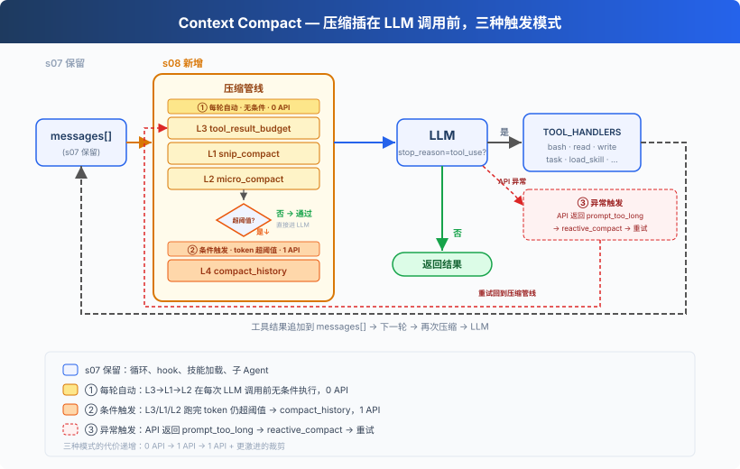
保留 07 的 hook 结构、技能加载、子 Agent 等骨架，省略部分工具细节以聚焦压缩。核心变动：每轮 LLM 调用前插入三层预处理器（0 API），token 仍超阈值时触发 LLM 摘要（1 API），API 报错时应急裁剪。
核心设计：便宜的先跑，贵的后跑。
工作原理
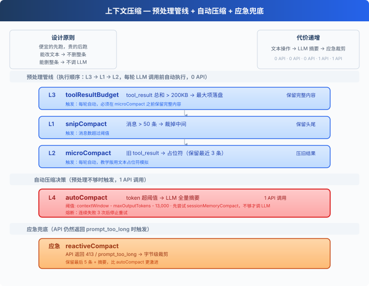
L1: snip_compact — 裁掉无关的旧对话
Agent 跑了 80 轮对话，messages 攒了 160
条。最前面的"帮我创建 hello.py"和当前工作几乎无关了，但全占着位置。
消息数超过 50 条 → 保留头部 3 条（初始上下文）和尾部 47 条（当前工作），中间裁掉：
代码
def snip_compact(messages, max_messages=50):
if len(messages) <= max_messages:
return messages
keep_head, keep_tail = 3, max_messages - 3
snipped = len(messages) - keep_head - keep_tail
placeholder = {"role": "user",
"content": f"[snipped {snipped} messages from conversation middle]"}
return messages[:keep_head] + [placeholder] + messages[-keep_tail:]裁掉了整条消息，但剩下的消息里 tool_result
内容仍在累积——第 34 条消息里可能躺着 30KB 的旧文件内容。→ L2。
L2: micro_compact — 旧工具结果占位
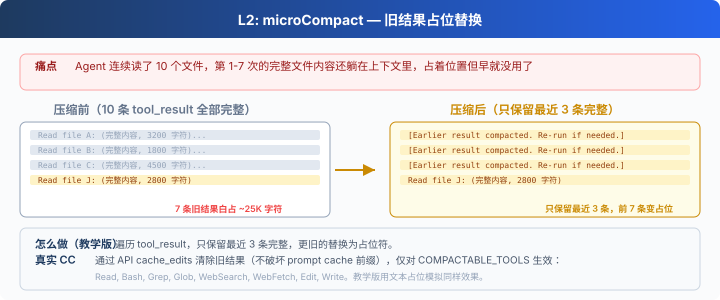
Agent 连续读了 10 个文件。第 1-7 次的完整内容还躺在上下文里，早就不需要了，但占着大量空间。
只保留最近 3 条 tool_result
的完整内容，更旧的替换为一行占位符：
代码
KEEP_RECENT_TOOL_RESULTS = 3
def micro_compact(messages):
tool_results = collect_tool_result_blocks(messages)
if len(tool_results) <= KEEP_RECENT_TOOL_RESULTS:
return messages
for _, _, block in tool_results[:-KEEP_RECENT_TOOL_RESULTS]:
if len(block.get("content", "")) > 120:
block["content"] = "[Earlier tool result compacted. Re-run if needed.]"
return messages旧结果清掉了，但单条新结果可能就有 500KB——一个 cat
大文件的输出就能打满上下文。→ L3。
L3: tool_result_budget — 大结果落盘
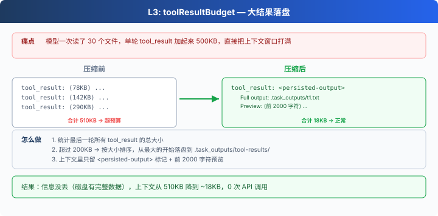
模型一次读了 5 个大文件，单条 user 消息里所有
tool_result 加起来 500KB。
统计最后一条 user 消息里所有 tool_result 的总大小。超过
200KB → 按大小排序，从最大的开始落盘到
.task_outputs/tool-results/，上下文里只留
<persisted-output> 标记 + 前 2000
字符预览。模型看到标记后知道完整内容在磁盘上，需要时可以重新读。
代码
def tool_result_budget(messages, max_bytes=200_000):
last = messages[-1]
blocks = [(i, b) for i, b in enumerate(last["content"])
if b.get("type") == "tool_result"]
total = sum(len(str(b.get("content", ""))) for _, b in blocks)
if total <= max_bytes:
return messages
ranked = sorted(blocks, key=lambda p: len(str(p[1].get("content", ""))), reverse=True)
for idx, block in ranked:
if total <= max_bytes:
break
block["content"] = persist_large_output(block["tool_use_id"], str(block["content"]))
total = recalculate_total(blocks)
return messages前三层都是纯文本/结构操作，0 API 调用，但也无法"理解"对话内容。上下文可能仍然太大。→ L4。
L4: compact_history — LLM 全量摘要
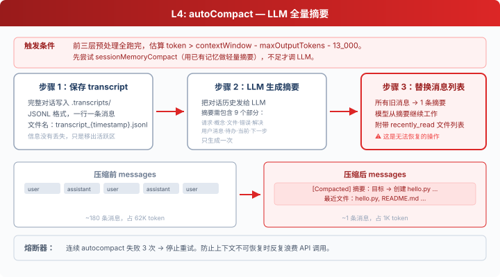
前三层全跑完了，但在超大项目中连续工作 30 分钟后，token 仍然超过阈值。
三步流程：
- 保存 transcript：完整对话写入
.transcripts/，JSONL 格式。transcript 保留了可恢复记录，但模型的活跃上下文里只剩摘要。对模型当下推理来说，细节已经不在上下文中了。教学代码没有提供 transcript 检索工具。 - LLM 生成摘要：把对话历史发给 LLM，要求保留当前目标、重要发现、已改文件、剩余工作、用户约束等关键信息。
- 替换消息列表：所有旧消息被替换为一条摘要。教学版只保留摘要；真实 Claude Code 会在 compact 后重新附加部分最近文件、计划、agent/skill/tool 等上下文。
代码
def compact_history(messages):
transcript_path = write_transcript(messages) # 先保存完整对话
summary = summarize_history(messages) # LLM 生成摘要
return [{"role": "user",
"content": f"[Compacted]\n\n{summary}"}]熔断器：连续失败 3 次后停止重试，防止死循环浪费 API 调用。
应急: reactive_compact
有时候 API 还是返回
prompt_too_long（413），上下文增长速度快于压缩触发速度时。
这时触发 reactive_compact：比 compact_history 更激进，从尾部回退，以字节级精度裁剪到 API 可接受的大小，只保留最后 5 条消息 + 摘要。
代码
def reactive_compact(messages):
transcript = write_transcript(messages)
summary = summarize_history(messages)
tail = messages[-5:]
return [{"role": "user",
"content": f"[Reactive compact]\n\n{summary}"}, *tail]reactive compact 有重试上限（默认 1 次）。再失败就抛出异常，不无限循环。完整的错误恢复逻辑留给 11。
合起来跑
代码
def agent_loop(messages):
reactive_retries = 0
while True:
# 三个预处理器（0 API 调用）
# 顺序：budget 先跑，确保大内容落盘后再做占位和裁剪
messages[:] = tool_result_budget(messages) # L3: 大结果落盘
messages[:] = snip_compact(messages) # L1: 裁中间
messages[:] = micro_compact(messages) # L2: 旧结果占位
# 还不够？LLM 摘要（1 API 调用）
if estimate_token_count(messages) > THRESHOLD:
messages[:] = compact_history(messages)
try:
response = client.messages.create(...)
except PromptTooLongError:
if reactive_retries < MAX_REACTIVE_RETRIES:
messages[:] = reactive_compact(messages) # 应急
reactive_retries += 1
continue
raise # 超过重试上限，抛出异常
# ... 工具执行 ...
# compact 工具：模型主动调用时触发 compact_history
if block.name == "compact":
messages[:] = compact_history(messages)
results.append({..., "content": "[Compacted. History summarized.]"})
messages.append({"role": "user", "content": results})
break # 结束当前 turn，用压缩后的上下文开始新一轮顺序不能换。 L3（budget）在 L2（micro）前面，因为
micro 会把旧的大 tool_result 替换成一行占位符，budget
必须在那之前把完整内容落盘。这也是为什么 CC 源码把
applyToolResultBudget 放在最前面。
相对 07 的变更
| 组件 | 之前 (07) | 之后 (08) |
|---|---|---|
| 上下文管理 | 无（上下文无限膨胀） | 四层压缩管线 + 应急 |
| 新函数 | — | snip_compact, micro_compact, tool_result_budget, compact_history, reactive_compact |
| 工具 | bash, read, write, edit, glob, todo_write, task, load_skill (8) | 8 + compact (9) |
| 循环 | LLM 调用 → 工具执行 | 每轮前跑三层预处理器 + 阈值触发 compact_history |
| 设计原则 | — | 便宜的先跑，贵的后跑 |
接下来
上下文压缩让 Agent 能跑很久不会崩。但每次压缩后，用户之前告诉它的偏好、约束也跟着丢了。能不能让 Agent 有选择地记住重要的事？
09 Memory → 三个子系统：选择记什么、提取关键信息、整理巩固。跨压缩、跨会话。
深入 CC 源码
以下基于 CC 源码
compact.ts、autoCompact.ts、microCompact.ts、query.ts的分析。
执行顺序对照
教学版为了讲解方便按 L1/L2/L3/L4 编号，但实际执行顺序和编号不完全对应：
| 维度 | 教学版 | Claude Code |
|---|---|---|
| 执行顺序 | budget → snip → micro → auto | budget → snip → micro → collapse →
auto（query.ts:379-468） |
| snip_compact | 保留头 3 + 尾 47 | CC 仅主线程启用；实现不在开源仓库中（HISTORY_SNIP
feature gate），但接口可见：snipCompactIfNeeded(messages) →
{ messages, tokensFreed, boundaryMessage? }，还暴露了
SnipTool 工具让模型主动调用。教学版的 3/47 是简化参数 |
| micro_compact | 文本占位符替换 | 两条路径：time-based 直接清内容，cached 走 API
cache_edits（legacy path 已移除） |
| micro_compact 白名单 | 按位置（最近 3 条） | time-based 按时间阈值触发；cached
按计数触发（microCompact.ts） |
| tool_result_budget | 200KB 字符 | 200,000 字符（toolLimits.ts:49） |
| compact_history 阈值 | 字符数估算 | 精确
token：contextWindow - maxOutputTokens - 13_000 |
| 摘要要求 | 5 类信息 | 9 个部分 +
<analysis>/<summary> 双标签 |
| 压缩 prompt | 简单 prompt | 首尾双重防呆禁止调工具 |
| PTL retry | 有（简化） | truncateHeadForPTLRetry()
按消息组回退（compact.ts:243-290） |
| 后压缩恢复 | 无（教学版只保留摘要） | 自动重新读取最近文件、计划、agent/skill/tool 等 |
| 熔断器 | 3 次 | 3 次（autoCompact.ts:70） |
| reactive 重试 | 1 次 | CC 有更精细的分级重试 |
执行顺序详解
CC 源码 query.ts 中的真实顺序：
applyToolResultBudget（L379）：先处理大结果，确保完整内容落盘snipCompact（L403）：裁中间消息microcompact（L414）：旧结果占位contextCollapse（L441）：独立的上下文管理系统（教学版无）autoCompact（L454）：LLM 全量摘要
教学版的 budget → snip → micro 顺序与此一致。教学版没有 contextCollapse 机制。
完整常量参考
| 常量 | 值 | 源文件 |
|---|---|---|
AUTOCOMPACT_BUFFER_TOKENS |
13,000 | autoCompact.ts:62 |
MAX_CONSECUTIVE_AUTOCOMPACT_FAILURES |
3 | autoCompact.ts:70 |
MAX_OUTPUT_TOKENS_FOR_SUMMARY |
20,000 | autoCompact.ts:30 |
POST_COMPACT_TOKEN_BUDGET |
50,000 | compact.ts:123 |
POST_COMPACT_MAX_FILES_TO_RESTORE |
5 | compact.ts:122 |
POST_COMPACT_MAX_TOKENS_PER_FILE |
5,000 | compact.ts:124 |
| 时间 micro_compact 间隔 | 60 分钟 | timeBasedMCConfig.ts |
MAX_COMPACT_STREAMING_RETRIES |
2 | compact.ts:131 |
contextCollapse 和 sessionMemoryCompact
CC 源码中还有两个机制本教学版没有展开：
- contextCollapse：独立的上下文管理系统，启用时抑制
proactive autocompact（
autoCompact.ts:215-222），由 collapse 的 commit/blocking 流程接管上下文管理。但 manual/compact和 reactive fallback 仍是独立路径，不受 contextCollapse 影响。 - sessionMemoryCompact：compact_history 之前，CC 会先尝试用已有的 session memory（09 会讲到）做轻量摘要，不调 LLM。这个机制等学完 09 之后回头看会更清楚。
压缩 prompt 长什么样？
CC 的压缩 prompt 有两个硬性要求：
- 绝对禁止调用工具：开头就是
CRITICAL: Respond with TEXT ONLY. Do NOT call any tools.，末尾还会再 REMINDER 一次 - 先分析再总结：模型需要先在
<analysis>标签里理清思路，然后在<summary>标签里输出正式摘要。analysis 在格式化时被剥离
教学版的简化是刻意的
- micro_compact 用文本占位 → 我们没有 API 层的
cache_edits权限 - token 用字符数估算 → 精确 tokenizer 不在教学范围内
- 后压缩恢复省略 → 教学版只保留摘要，不自动重新附加文件
- 两个辅助机制不展开 → 属于 10% 的细节
核心设计思想，便宜的先跑贵的后跑，完整保留。
09: Memory — 压缩会丢细节，要有一层不丢的
"压缩会丢细节, 要有一层不丢的" — 文件仓库 + 索引 + 按需加载，跨压缩、跨会话。
Harness 层: 记忆 — 跨压缩、跨会话的知识积累。
问题
08 的 autoCompact 会把当前目标、剩余工作、用户约束写进摘要，但细节会丢失："用 tab 缩进不要用空格"可能被简化成"用户有代码风格偏好"。而且新开一个会话，连摘要也没了。
LLM 没有持久状态，所有信息都在上下文窗口里。上下文满了要压缩，压缩就有损。需要一层不参与压缩、跨会话保留的存储。
解决方案
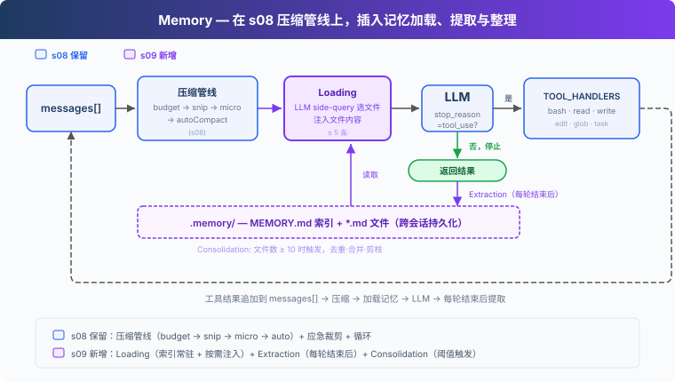
08 的压缩管线保留，聚焦记忆。存储选文件系统：.memory/
目录下，每个记忆一个 .md 文件，带 YAML
frontmatter（name / description /
type）。文件多了需要索引：MEMORY.md
一行一个链接，注入 SYSTEM。
关键设计：索引常驻 SYSTEM prompt（可被 prompt cache 缓存），文件内容按需注入到当前 user turn（按 filename/description 匹配当前对话，不破坏 cache）。写入由每轮结束后的提取器完成：用户显式说"记住"或表达稳定偏好时，提取器会保存为记忆。文件积累多了，定期整理去重。
四类记忆，各有用途：
| 类型 | 回答什么 | 示例 |
|---|---|---|
| user | 你是谁 | "用 tab 不用空格" |
| feedback | 怎么做事 | "别 mock 数据库" |
| project | 正在发生什么 | "auth 重写是合规驱动" |
| reference | 东西在哪找 | "pipeline bug 在 Linear INGEST" |
工作原理
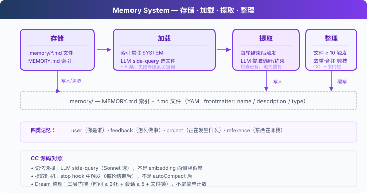
存储：Markdown 文件 + 索引
每个记忆是一个 .md 文件，YAML frontmatter
记录元数据：
代码
---
name: user-preference-tabs
description: User prefers tabs for indentation
type: user
---
User prefers using tabs, not spaces, for indentation.
**Why:** Consistency with existing codebase conventions.
**How to apply:** Always use tabs when writing or editing files.MEMORY.md 是索引，一行一个链接：
代码
- [user-preference-tabs](user-preference-tabs.md) — User prefers tabs for indentation写入新记忆时自动重建索引：
代码
def write_memory_file(name, mem_type, description, body):
slug = name.lower().replace(" ", "-")
filepath = MEMORY_DIR / f"{slug}.md"
filepath.write_text(
f"---\nname: {name}\ndescription: {description}\ntype: {mem_type}\n---\n\n{body}\n"
)
_rebuild_index()加载：两条路径
路径一：索引常驻 SYSTEM。
build_system() 每轮重建 SYSTEM 时读取
MEMORY.md，把记忆清单注入。SYSTEM prompt 中的索引可以被
prompt cache 缓存，不需要每轮重新发送。
路径二：相关记忆按需注入。
每轮调用前，load_memories() 把最近对话和记忆目录（name +
description）一起发给 LLM 做一次轻量
side-query，选出相关的文件名，再读文件内容临时注入到当前 user turn。最多
5 条，控制开销。
代码
def select_relevant_memories(messages, max_items=5):
files = list_memory_files()
if not files:
return []
# Build catalog: "0: user-preference-tabs — User prefers tabs..."
catalog = "\n".join(f"{i}: {f['name']} — {f['description']}" for i, f in enumerate(files))
response = client.messages.create(model=MODEL, messages=[{"role": "user",
"content": f"Select relevant memory indices. Return JSON array.\n\n"
f"Recent conversation:\n{recent}\n\nMemory catalog:\n{catalog}"}],
max_tokens=200)
text = extract_text(response.content).strip()
indices = json.loads(re.search(r'\[.*?\]', text).group())
return [files[i]["filename"] for i in indices if 0 <= i < len(files)]如果 side-query 失败（API 错误、JSON 解析失败），降级到关键词匹配 name + description。
写入：每轮结束后提取
用户不会每次都说"记住这个"。偏好通常散落在正常对话中："用 tab 比空格好"、"以后都用单引号"。
extract_memories()
在每轮结束时运行，条件是模型停止且没有
tool_use（说明对话告一段落）：
代码
# In agent_loop:
if response.stop_reason != "tool_use":
extract_memories(pre_compress) # 从压缩前快照提取新记忆
consolidate_memories() # 检查是否需要整理
return提取前先检查已有记忆，避免重复。提取 prompt 要求 LLM 返回
{name, type, description, body} 的 JSON
数组，只有确实有新信息时才写文件。
代码
def extract_memories(messages):
dialogue = format_recent_messages(messages[-10:])
existing = "\n".join(f"- {m['name']}: {m['description']}" for m in list_memory_files())
prompt = (
"Extract user preferences, constraints, or project facts.\n"
"Return JSON array: [{name, type, description, body}].\n"
"If nothing new or already covered, return [].\n\n"
f"Existing memories:\n{existing}\n\nDialogue:\n{dialogue[:4000]}"
)
# ... parse response, write files ...整理：低频合并去重
记忆文件会积累。consolidate_memories()
在文件数达到阈值（默认 10）时触发，让 LLM
去重、合并矛盾、淘汰过时记忆：
代码
CONSOLIDATE_THRESHOLD = 10
def consolidate_memories():
files = list_memory_files()
if len(files) < CONSOLIDATE_THRESHOLD:
return # 太少，不值得整理
# Send all memories to LLM, get back deduplicated list
# Replace all files with consolidated resultsCC 把这个过程叫 Dream，实际有四层门控：时间间隔、扫描节流、会话数、文件锁。教学版简化为文件数阈值。
Memory 适合保存什么
Memory 保存跨会话仍然有用的信息：用户偏好、反复出现的反馈、项目背景、常用入口和排查线索。它关注“以后还会用到什么”，并通过索引 + 按需加载把这些信息带回当前对话。
session memory 关注同一会话内的连续性：compact 之后，当前会话还需要保留哪些上下文。两者配合使用：Memory 管长期知识，session memory 管当前会话的压缩续接。
相对 08 的变更
| 组件 | 之前 (08) | 之后 (09) |
|---|---|---|
| 记忆能力 | 无（压缩后偏好随摘要退化） | 存储 + 加载 + 提取 + 整理 |
| 新函数 | — | write_memory_file, select_relevant_memories, load_memories, extract_memories, consolidate_memories |
| 存储 | — | .memory/MEMORY.md 索引 + .memory/*.md 文件 |
| 工具 | bash, read, write, edit, glob, todo_write, task, load_skill, compact (9) | bash, read_file, write_file, edit_file, glob, task (6) |
| 循环 | 每轮只做压缩 | 每轮注入记忆 + 压缩 + 每轮结束后提取 + 定期整理 |
接下来
记忆、压缩、工具都已就绪。但 system prompt 还是硬编码的一大段字符串。加了新工具要手动加描述，换了项目要重写整个 prompt。prompt 应该运行时组装。
10 System Prompt → 分段 + 运行时组装。不同项目、不同工具，拼出不同的 prompt。
深入 CC 源码
以下基于 CC 源码
src/下memdir/、services/、utils/、query/的分析，行号已对照核实。
源码路径
| 文件 | 行数 | 职责 |
|---|---|---|
memdir/memdir.ts |
507 | 核心：MEMORY.md 定义（34-38）、记忆行为指令区分
memory/plan/tasks（199-266）、loadMemoryPrompt()
三条路径（419-490） |
memdir/findRelevantMemories.ts |
141 | Sonnet side-query 选记忆（18-24
系统提示、97-122 调用逻辑） |
memdir/memoryTypes.ts |
271 | 类型定义，frontmatter 字段 |
memdir/memoryScan.ts |
— | 扫描 .md 文件，排除 MEMORY.md，读 frontmatter，最多 200 个，按 mtime
降序（35-94） |
services/extractMemories/extractMemories.ts |
615 | forked agent
提取记忆，受限权限，skipTranscript: true，maxTurns: 5（371-427） |
services/autoDream/autoDream.ts |
324 | Dream 整理，四层门控（63-66
默认值、130-190 门控、224-233 forked
agent） |
services/SessionMemory/sessionMemory.ts |
495 | 会话级记忆管理 |
services/compact/sessionMemoryCompact.ts |
— | session memory 轻量摘要，阈值 10K/5/40K（56-61） |
utils/attachments.ts |
— | 注入预算：200 行 / 4096 字节每文件，60KB 每
session（269-288）；按 query 找相关
memory（2196-2241） |
query.ts |
— | memory prefetch
每轮启动（301-304），非阻塞收集（1592-1614） |
query/stopHooks.ts |
— | stop hook fire-and-forget 触发提取和
Dream（141-155） |
记忆选择：LLM 选，不是 embedding
CC 用 Sonnet
本身来选（findRelevantMemories.ts），不是
embedding 向量相似度：
memoryScan.ts扫描.memory/下所有.md文件（排除 MEMORY.md），最多 200 个，按 mtime 降序- 把
name+description列成清单 - 发给 Sonnet side-query："根据名称和描述选出真正有用的记忆（最多 5 个）。不确定就不要选。"
- Sonnet 返回
{ selected_memories: ["file1.md", ...] } - 选中文件读取完整内容（每文件 ≤ 200 行 / 4096 字节），注入上下文。单 session 总预算 60KB
每轮用户 turn 开始时，query.ts:301-304 启动 memory
prefetch（异步）；工具执行后 1592-1614
非阻塞收集结果，不卡主流程。
提取时机：stop hook，不是 autoCompact 后
触发位置（stopHooks.ts:141-155）：在
handleStopHooks() 中，fire-and-forget 触发提取和
Dream。教学版把提取放在 stop_reason != "tool_use"
分支里，方向一致。
CC 的提取通过 forked agent
执行（extractMemories.ts:371-427）：受限权限、skipTranscript: true、maxTurns: 5。还有重叠保护：如果主
Agent 已经写入了记忆文件，跳过提取。
记忆文件格式
CC 用 Markdown + YAML
frontmatter，和教学版一致。四种类型：user、feedback、project、reference。
memdir.ts:34-38 定义索引约束：MEMORY.md
最多 200 行 / 25KB。memdir.ts:199-266
构建记忆行为指令，明确区分
memory、plan、tasks。存储位置：~/.claude/projects/<sanitized-git-root>/memory/。
Dream：四层门控
不是"空闲时触发"或"数量够了就合并"，而是四层门控（autoDream.ts，默认值
63-66，门控逻辑 130-190）：
- 时间门控：距上次合并 ≥ 24 小时
- 扫描节流：避免频繁扫描文件系统
- 会话门控：自上次合并以来修改了 ≥ 5 个会话 transcript
- 锁门控：没有其他进程正在合并（
.consolidate-lock文件）
合并本身通过 forked agent 执行（224-233）：定位 →
收集近期信号 → 合并写文件 → 剪枝更新索引。锁文件 mtime 就是
lastConsolidatedAt。崩溃恢复：1 小时后锁自动过期。
User Memory vs Session Memory
| User Memory | Session Memory | |
|---|---|---|
| 持久性 | 跨会话 | 单会话 |
| 存储 | memory/ 下多个 .md 文件 |
session-memory/<id>/memory.md |
| 加载到 | system prompt | compact 摘要 |
| 用途 | 跨会话的知识积累 | 跨 compact 的上下文连续性 |
sessionMemoryCompact（08 中提到的机制）正是使用了 Session
Memory：autoCompact 前先读 session memory 文件，如果内容足够（≥ 10K
token、≥ 5 条文本消息、≤ 40K
token，sessionMemoryCompact.ts:56-61），就用它做摘要，不调
LLM。
真实实现比教学版复杂的地方
- Feature flags：记忆相关功能有多层 feature gate 控制
- Team
memory：团队共享记忆，
loadMemoryPrompt()有专门路径（教学版未涉及） - KAIROS：时机感知的记忆提取策略，
loadMemoryPrompt()中 daily-log 模式 - Prompt cache：记忆注入需要考虑 prompt cache 的 TTL，避免每次都重写 system prompt 的大段内容
- 文件锁：多进程并发时的锁机制
- Memory prefetch：异步预取，不阻塞主流程
教学版的简化是刻意的
- LLM side-query → LLM side-query + 关键词降级：教学版保留了 LLM 选择，加了降级路径
- 记忆 JSON → Markdown + frontmatter：教学版与 CC 一致
- stop hook 触发 →
stop_reason != "tool_use"分支：方向一致 - 四层门控 → 文件数阈值：教学版没有 transcript 系统和多会话概念
- forked agent + 受限权限 → 直接调用：教学版没有子进程隔离
10: System Prompt — 运行时组装，不硬编码
"prompt 是组装出来的, 不是写死的" — 分段 + 按需拼接 + 缓存。
Harness 层: 提示 — 运行时组装, 不硬编码。
问题
从 01 到 09，system prompt 都是一行硬编码：
代码
SYSTEM = f"You are a coding agent at {WORKDIR}. Use tools to solve tasks."01 够用，只有 bash、read、write 三个工具。但到 09，Agent 已经有记忆、有压缩、有技能加载。prompt 该提的能力越来越多：
代码
SYSTEM = (
f"You are a coding agent at {WORKDIR}. "
"Use tools to solve tasks. Act, don't explain. "
"Before starting any multi-step task, use todo_write. "
"Skills are available via list_skills and load_skill. "
"Relevant memories are injected below when available. "
# ... 加一个能力就多一段
)三个问题：
- 换项目要重写整个 prompt，不知道哪些该改、哪些该留
- 修改一处可能影响全局，加一段工具描述可能跟前面的指令冲突
- 每次请求都带全部内容，即使当前对话用不到某些段落也浪费 token
System prompt 应该是运行时根据当前状态组装的配置：哪些工具启用、哪些上下文可见、哪些记忆相关、哪些内容必须保持稳定以命中 prompt cache。
解决方案
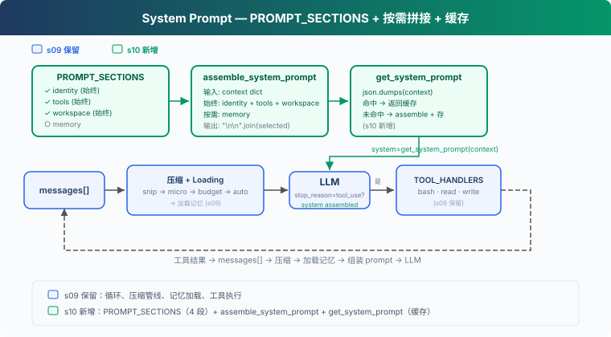
10 聚焦 prompt 组装机制。以 08-09
的能力为背景，但不重复实现压缩和记忆系统。核心变动：把硬编码的
SYSTEM
拆成独立段落（section），运行时根据真实状态按需拼接，缓存结果避免重复组装。
四个 section，两种加载策略：
| Section | 加载策略 | 内容 | 判断依据 |
|---|---|---|---|
| identity | 始终 | 你是谁、怎么做事 | 始终存在 |
| tools | 始终 | 可用工具列表 | enabled_tools |
| workspace | 始终 | 工作目录 | 始终存在 |
| memory | 按需 | 相关记忆内容 | .memory/MEMORY.md 是否存在 |
关键设计：section 是否加载取决于真实状态（工具是否存在、文件是否存在），不是消息里的关键词。
工作原理
PROMPT_SECTIONS: 分段定义
把一大段字符串拆成字典，每个 key 是一个主题：
代码
PROMPT_SECTIONS = {
"identity": "You are a coding agent. Act, don't explain.",
"tools": "Available tools: bash, read_file, write_file.",
"workspace": f"Working directory: {WORKDIR}",
"memory": "Relevant memories are injected below when available.",
}每个 section 独立维护。修改 tools 不影响
identity，新增 memory 不动
workspace。
assemble_system_prompt: 按需拼接
不是所有 section 每次都需要。当前没有记忆文件，加载 memory section 只是浪费 token。根据 context 的真实状态决定加载哪些：
代码
def assemble_system_prompt(context: dict) -> str:
sections = []
# 始终加载
sections.append(PROMPT_SECTIONS["identity"])
sections.append(PROMPT_SECTIONS["tools"])
sections.append(PROMPT_SECTIONS["workspace"])
# 按需加载 — 基于真实状态，不是关键词
memories = context.get("memories", "")
if memories:
sections.append(f"Relevant memories:\n{memories}")
return "\n\n".join(sections)"始终加载"的是每轮都需要的：身份、工具、工作目录。"按需加载"的只在特定条件下才有用。
为什么不全加载？token 有成本（system prompt 每轮计费），信息越少 LLM 越专注（无关指令是噪音）。
get_system_prompt: 缓存避免重复拼接
上下文没变时（同一轮对话的多次 LLM 调用，context 相同），重新拼接是浪费。用确定性序列化检测变化，命中缓存直接返回：
代码
def get_system_prompt(context: dict) -> str:
global _last_context_key, _last_prompt
key = json.dumps(context, sort_keys=True, ensure_ascii=False, default=str)
if key == _last_context_key and _last_prompt:
return _last_prompt
_last_context_key = key
_last_prompt = assemble_system_prompt(context)
return _last_prompt用 json.dumps 而不是 hash()：Python 内置
hash() 有进程随机化，不适合做稳定 cache key，而且遇到
list/dict 会报 unhashable type。
注意：这里的缓存只是"避免重复拼接字符串"，和 CC 的 API prompt cache
不是一回事。CC 的 prompt cache 通过
SYSTEM_PROMPT_DYNAMIC_BOUNDARY
分隔静态和动态部分，静态部分命中 global
cache，不因动态内容变化而失效。
context: 真实状态，不是关键词猜测
context 反映当前运行态的真实状态：
代码
def update_context(context: dict, messages: list) -> dict:
memories = ""
if MEMORY_INDEX.exists():
content = MEMORY_INDEX.read_text().strip()
if content:
memories = content
return {
"enabled_tools": list(TOOL_HANDLERS.keys()),
"workspace": str(WORKDIR),
"memories": memories,
}enabled_tools 列出实际注册的工具。memories
检查 .memory/MEMORY.md 是否存在。section
加载基于这些真实状态，不在消息里搜关键词。
合起来跑
代码
def agent_loop(messages: list, context: dict):
system = get_system_prompt(context)
while True:
response = client.messages.create(
model=MODEL, system=system, messages=messages,
tools=TOOLS, max_tokens=8000)
# ... 工具执行 ...
context = update_context(context, messages)
system = get_system_prompt(context)每轮循环开头拿一次 system prompt。context 变了就重新组装，没变就返回缓存。
相对 09 的变更
| 组件 | 之前 (09) | 之后 (10) |
|---|---|---|
| prompt | 硬编码 SYSTEM 字符串 | PROMPT_SECTIONS + assemble_system_prompt |
| 缓存 | 无 | get_system_prompt（json.dumps 检测 + 缓存） |
| 新函数 | — | assemble_system_prompt, get_system_prompt, update_context |
| 工具 | bash, read_file, write_file (3) | bash, read_file, write_file (3) — 不变 |
| 循环 | 用固定 SYSTEM | 用 get_system_prompt(context) |
接下来
System prompt 可以运行时组装了，但 Agent 碰到错误还是会崩。网络抖动、API 限流、输出被截断、上下文超限，这些不是 bug，是常态。
11 Error Recovery → 四条恢复路径。升级 token、压缩上下文、指数退避、切换模型。
深入 CC 源码
以下基于 CC 源码
constants/prompts.ts（914 行）、constants/systemPromptSections.ts（68 行）、context.ts（189 行）、utils/api.ts（718 行）、utils/systemPrompt.ts（123 行）、bootstrap/state.ts的分析。
CC 的 system prompt 有多少 section？
数量不固定，受 feature flag、output style、KAIROS/Proactive 模式、用户类型、token 预算等影响。大致分两类：
静态 section（始终加载）：identity、system、doing_tasks、actions、using_tools、tone_style、output_efficiency 等。
动态 section（按状态加载）：session_guidance、memory、ant_model_override、env_info_simple、language、output_style、mcp_instructions、scratchpad、frc、summarize_tool_results、numeric_length_anchors、token_budget、brief 等。
mcp_instructions 是唯一的易失性 section（通过
DANGEROUS_uncachedSystemPromptSection() 创建），因为 MCP
server 可以在轮次间连接和断开。
组装函数
代码
getSystemPrompt(tools, model, additionalWorkingDirs?, mcpClients?): Promise<string[]>返回 string[]（每个元素是一个 section），由
SYSTEM_PROMPT_DYNAMIC_BOUNDARY 分隔静态和动态部分。
cache scope
启用 global cache boundary 时，静态 section 合并成一个 global cache
block，动态 section 不使用 global
cache（cacheScope: null）。没有 boundary 或跳过 global
cache 的路径才会走 org scope。
教学版的缓存只避免重复拼接字符串。CC 的三层缓存：
- lodash memoize：
getSystemContext和getUserContext在会话中缓存（context.ts） - section
注册缓存：
STATE.systemPromptSectionCache缓存动态 section 结果，/clear或/compact时清除 - API
级缓存：
splitSysPromptPrefix()（api.ts）把 prompt 按 boundary 分成不同 cache scope 的块
getUserContext vs getSystemContext
| getSystemContext | getUserContext | |
|---|---|---|
| 内容 | gitStatus、cacheBreaker | CLAUDE.md 内容、currentDate |
| 注入方式 | 追加到 system prompt 数组 | 前置为 <system-reminder> 用户消息 |
| 何时跳过 | 自定义 system prompt 时 | 始终运行 |
模式如何改变 prompt
- CLAUDE_CODE_SIMPLE：整个 prompt 只有 2 行
- Proactive/KAIROS：用紧凑版 prompt 替换所有标准 section
- Coordinator：用协调器专用 prompt 完全替换
- Agent 模式：Agent 定义的 prompt 替换或追加到默认 prompt
总大小
标准交互模式下 system prompt 核心约 20-30KB 文本。CLAUDE_CODE_SIMPLE 约 150 字符。用户上下文（CLAUDE.md）和系统上下文（git status）在此基础上累加。
11: Error Recovery — 错误不是结束，是重试的开始
"错误不是终点, 是重试的起点" — 升级 token、压缩上下文、切换模型。
Harness 层: 韧性 — 主循环遇到错误时分类并恢复。
问题
Agent 跑着跑着报错了：
代码
Error: 529 overloadedAgent 崩溃了。它没有重试，没有换模型，没有减少上下文——直接崩溃。
生产环境中 API 错误是常态。三种最常见的故障模式：输出被截断（模型话说一半 token 用完了）、上下文超限（压缩后还是太长）、临时故障（429 限流 / 529 过载）。一个不处理错误的 Agent 就像一个一碰就熄火的车。
解决方案
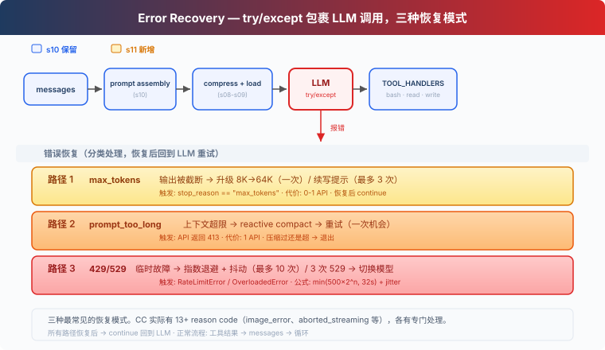
10 的循环、prompt 组装全部保留。唯一的变动：LLM 调用包裹在
try/except 里，根据错误类型走不同的恢复路径。恢复后
continue 回到循环开头重新调用 LLM。
三种最常见的恢复模式（教学版只处理 429/529；真实系统还覆盖连接错误、超时、云厂商认证缓存等。CC 实际有 13+ reason code，其余见 Deep dive）：
| 模式 | 触发 | 恢复动作 |
|---|---|---|
| 输出截断 | max_tokens |
升级 8K→64K / 续写提示 |
| 上下文超限 | prompt_too_long |
reactive compact → 重试 |
| 临时故障 | 429 / 529 | 指数退避 + 抖动，连续 529 可切换备用模型 |
工作原理
路径 1: 输出被截断
模型话说一半，max_tokens 用完了。默认 8000 token
不够它输出完整回答。
第一次发生时，直接把 max_tokens 从 8K 升级到 64K（8
倍空间），重试同一请求——此时不追加截断输出到
messages，保持原始请求不变。如果 64K
还是不够，才保存截断输出并注入续写提示让模型接着刚才的话继续说，最多 3
次：
代码
if response.stop_reason == "max_tokens":
# First escalation: don't append truncated output, retry same request
if not state.has_escalated:
max_tokens = ESCALATED_MAX_TOKENS
state.has_escalated = True
continue # messages unchanged, same request with more tokens
# 64K still truncated: save output + continuation prompt
messages.append({"role": "assistant", "content": response.content})
if state.recovery_count < MAX_RECOVERY_RETRIES:
messages.append({"role": "user", "content":
"Output token limit hit. Resume directly — "
"no apology, no recap. Pick up mid-thought."})
state.recovery_count += 1
continue
return # still truncated after 3 continuations
# Normal: append after max_tokens check
messages.append({"role": "assistant", "content": response.content})升级只有一次机会，续写最多 3 次。超过就退出——继续续写也不会有实质产出。
路径 2: 上下文超限
LLM 说"你的上下文太长了"（prompt_too_long）。08
的四层压缩全跑过了，还是超。
触发 reactive compact——比 auto compact 更激进。教学版只保留最后 5 条消息模拟压缩效果；真实实现会调用 LLM 生成 compact 摘要再重试。压缩后重试。但如果压缩过一次还是超限，只能退出——再压缩也不会变小：
代码
except PromptTooLongError:
if not state.has_attempted_reactive_compact:
messages[:] = reactive_compact(messages)
state.has_attempted_reactive_compact = True
continue
return # 压缩过了还是超限，只能退出路径 3: 临时故障
网络抖动、429 限流、529 过载——这些不是 bug，是分布式系统的常态。
429 和 529 统一走指数退避 + 抖动：第一次等 0.5 秒，第二次等 1
秒，第三次等 2 秒，最多 10
次。加随机抖动让并发请求不在同一时刻重试。连续 3 次 529 过载 →
切换到备用模型（若配置了 FALLBACK_MODEL_ID 环境变量）：
代码
def retry_delay(attempt, retry_after=None):
if retry_after:
return retry_after
base = min(500 * (2 ** attempt), 32000) / 1000
return base + random.uniform(0, base * 0.25)
def with_retry(fn, state, max_retries=10):
for attempt in range(max_retries):
try:
return fn()
except (RateLimitError, OverloadedError):
delay = retry_delay(attempt)
time.sleep(delay)
if is_overloaded:
state.consecutive_529 += 1
if state.consecutive_529 >= 3 and FALLBACK_MODEL:
state.current_model = FALLBACK_MODEL
raise MaxRetriesExceeded()退避公式：min(500 × 2^attempt, 32000) + random(0~25%)。如果服务器返回
Retry-After header，优先用那个值。
合起来跑
代码
def agent_loop(messages, context):
system = get_system_prompt(context)
state = RecoveryState()
max_tokens = 8000
while True:
try:
response = with_retry(
lambda: client.messages.create(
model=state.current_model, system=system,
messages=messages, tools=TOOLS,
max_tokens=max_tokens),
state)
except Exception as e:
if is_prompt_too_long_error(e):
if not state.has_attempted_reactive_compact:
messages[:] = reactive_compact(messages)
state.has_attempted_reactive_compact = True
continue
return
log_error(e)
return
# max_tokens check BEFORE appending to messages
if response.stop_reason == "max_tokens":
if not state.has_escalated:
max_tokens = 64000
state.has_escalated = True
continue # retry same request, messages unchanged
# save truncated output + continuation prompt
messages.append({"role": "assistant", "content": response.content})
messages.append({"role": "user", "content": CONTINUATION_PROMPT})
continue
# Normal completion
messages.append({"role": "assistant", "content": response.content})
if response.stop_reason != "tool_use":
return
# ... tool execution ...外层 try/except 捕获 API 异常（prompt_too_long
等），with_retry
处理瞬态错误（429/529），stop_reason
检查处理截断。三种恢复机制各管各的错误类型。
相对 10 的变更
| 组件 | 之前 (10) | 之后 (11) |
|---|---|---|
| 错误处理 | 无（一碰就崩溃） | 三种恢复模式 + 指数退避 |
| 新常量 | — | ESCALATED_MAX_TOKENS=64000, MAX_RETRIES=10, BASE_DELAY_MS=500, FALLBACK_MODEL |
| 新函数 | — | with_retry, retry_delay, reactive_compact, is_prompt_too_long_error, RecoveryState |
| 工具 | bash, read_file, write_file (3) | bash, read_file, write_file (3) — 不变 |
| 循环 | 裸调用 LLM | try/except 包裹 + continue 重试 |
接下来
Agent 现在能在错误中自动恢复了。但它处理的任务仍然是"一次性"的——你给它一个任务，它做完，结束。
能不能让 Agent 管理一个任务列表——有依赖关系、持久化到磁盘、跨会话能恢复？TODO 列表不是任务系统。
12 Task System → 任务是有依赖、有状态、持久化的图。这是多 Agent 协作的基础。
深入 CC 源码
以下基于 CC 源码
query.ts（1729 行）、services/api/withRetry.ts（822 行）、query/tokenBudget.ts（93 行）、utils/tokenBudget.ts（73 行）的分析。
一、十几种 reason/transition（不只是 3 条）
教学版讲了 3 种最常见的恢复模式。CC 实际有十几种 reason/transition，每轮 LLM 调用后都会判断：
| reason/transition | 教学版对应 | CC 行为 |
|---|---|---|
completed |
正常完成 | 返回结果 |
next_turn |
正常工具调用 | 继续下一轮工具执行 |
max_output_tokens_escalate |
路径 1 | 8K→64K 升级 |
max_output_tokens_recovery |
路径 1 续写 | 续写提示（最多 3 次） |
reactive_compact_retry |
路径 2 | reactive compact → 重试 |
prompt_too_long |
路径 2 | 同上 |
collapse_drain_retry |
未展开 | context collapse 先提交暂存 |
model_error |
未展开 | 重试 |
image_error |
未展开 | ImageSizeError / ImageResizeError
专门处理 |
aborted_streaming |
未展开 | 流式中止恢复 |
aborted_tools |
未展开 | 工具中止 |
stop_hook_blocking |
未展开 | 注入 blocking error → 模型自纠 |
stop_hook_prevented |
未展开 | hooks 阻止 |
hook_stopped |
未展开 | hook 停止执行 |
token_budget_continuation |
未展开 | token 用量 < 90% 时继续 |
blocking_limit |
未展开 | 阻塞限制 |
max_turns |
未展开 | 达到最大轮次 |
教学版只展开了前 5 种（最常见的），其余各有专门处理逻辑。
二、指数退避的精确公式
CC 的退避延迟（withRetry.ts:530-548）：
代码
delay = min(500 × 2^(attempt-1), 32000) + random(0~25%)| 尝试 | 基础延迟 | + 抖动 |
|---|---|---|
| 1 | 500ms | 0-125ms |
| 2 | 1000ms | 0-250ms |
| 4 | 4000ms | 0-1000ms |
| 7+ | 32000ms（上限） | 0-8000ms |
如果服务器返回 Retry-After header，优先用那个值。
三、CONTINUATION 提示原文
CC 的续写提示（query.ts:1225-1227）：
代码
Output token limit hit. Resume directly — no apology, no recap of what
you were doing. Pick up mid-thought if that is where the cut happened.
Break remaining work into smaller pieces.Token budget 的 nudge 提示（tokenBudget.ts:72）：
代码
Stopped at {pct}% of token target. Keep working — do not summarize.四、流式错误处理
CC 的流式路径中，可恢复的错误（413、max_tokens、media error）在
streaming
期间被暂扣不展示（query.ts:788-822）——SDK
消费者看不到，只有恢复逻辑能看到。等 streaming
结束后才判断是否需要恢复。
五、529 → Fallback Model 切换
连续 3 次 529 过载错误后（MAX_529_RETRIES = 3），CC
自动切换到 fallback model（如 Opus → Sonnet）。切换时清除所有 pending
消息和 tool 结果，给用户展示 "Switched to {model} due to high
demand"。
六、Diminishing Returns 检测
Token budget 的"继续"不是无限的。当连续 3 次 continuation 且 token
增量 < 500 时，系统判断"继续也没有实质性产出"，停止
continuation（tokenBudget.ts:60-62）。
12: Task System — 目标太大，拆成小任务
"大目标拆成小任务, 排好序, 持久化" — 文件持久化的任务图, 多 agent 协作的基础。
Harness 层: 任务 — 持久化的目标, 可恢复的进度。
问题
Agent 接到一个项目：搭数据库、写 API、加测试。它用 05 的 TodoWrite 列了一张清单，然后开始写 API，写到一半发现没数据库表，回头补；加测试时发现 API 接口签名又变了...
盖房子不能先盖屋顶再打地基。任务之间有先后。任务依赖应该形成有向无环图（DAG）；教学版只演示
blockedBy 检查，没有实现环检测。
05 的 TodoWrite
是当前任务的执行清单，保存在会话内存中。这里需要的是任务系统：每个任务是一个
JSON 文件，任务之间有 blockedBy
依赖，跨会话持久化在磁盘上。
解决方案
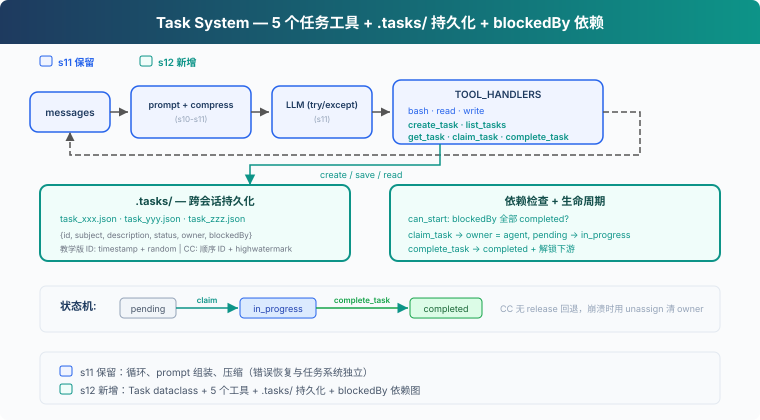
教学代码保留基础 agent loop，为聚焦任务系统省略了 S11
的完整错误恢复（RecoveryState、退避、升级、reactive compact、fallback
model）。新增 5 个任务工具 + .tasks/ 目录持久化 +
blockedBy 依赖检查。任务系统与错误恢复是独立层：CC 源码中
utils/tasks.ts 只管 CRUD，query.ts 的
with_retry/RecoveryState 管错误恢复，互不耦合。
TodoWrite vs Task System：
| TodoWrite (05) | Task System (12) | |
|---|---|---|
| 定位 | 当前任务的执行清单 | 可恢复的任务系统 |
| 存储 | 进程内 / 会话状态 | .tasks/{id}.json |
| 依赖 | 无 | blockedBy / blocks 依赖图 |
| 生命周期 | 当前会话 / 当前任务 | 跨会话保留 |
| 分工 | 不负责任务认领 | owner / claim |
| 状态 | pending / in_progress / completed | pending / in_progress / completed |
| 粒度 | Agent 自己的步骤 | 可被认领、追踪、解锁的任务 |
工作原理
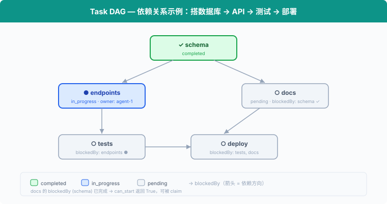
Task: 数据结构
每个任务是一个 JSON 文件，存于 .tasks/ 目录：
代码
@dataclass
class Task:
id: str
subject: str
description: str
status: str # pending | in_progress | completed
owner: str | None # Agent 名（多 Agent 场景）
blockedBy: list[str] # 依赖的任务 ID 列表ID 用 timestamp + random hex 生成，简单但够用。CC 用顺序
ID + highwatermark 文件防止 ID 重用，是更严谨的设计。
create_task: 创建任务
代码
def create_task(subject: str, description: str = "",
blockedBy: list[str] | None = None) -> Task:
task = Task(
id=f"task_{int(time.time())}_{random_hex(4)}",
subject=subject, description=description,
status="pending", owner=None,
blockedBy=blockedBy or [],
)
save_task(task)
return task创建时自动 save_task 到
.tasks/{id}.json。blockedBy 声明依赖，比如 "写
API" 的 blockedBy 是 ["task_schema"]。
can_start: 依赖检查
一个任务只能在它的 blockedBy 全部
completed 之后才能开始：
代码
def can_start(task_id: str) -> bool:
task = load_task(task_id)
for dep_id in task.blockedBy:
if not _task_path(dep_id).exists():
return False # missing dependency = blocked
dep = load_task(dep_id)
if dep.status != "completed":
return False
return Truecan_start 是 claim_task
的前置检查：blockedBy 里有任何一个不是
completed，就不能认领。不存在的依赖视为 blocked，避免引用错误 ID
时崩溃。
claim_task: 认领任务
Agent 开始做一个任务时，调用 claim_task：设置
owner，状态从 pending →
in_progress。owner 字段记录谁在做这个任务，多
Agent 场景下防止重复认领：
代码
def claim_task(task_id: str, owner: str = "agent") -> str:
task = load_task(task_id)
if task.status != "pending":
return f"Task {task_id} is {task.status}, cannot claim"
if not can_start(task_id):
deps = [d for d in task.blockedBy
if load_task(d).status != "completed"]
return f"Blocked by: {deps}"
task.owner = owner
task.status = "in_progress"
save_task(task)
return f"Claimed {task_id} ({task.subject})"如果任务已被别人认领（status != "pending"），或者依赖没完成（can_start
返回 False），拒绝认领。
complete_task: 完成与解锁
任务做完后，设为
completed。同时扫描所有其他任务，找出刚刚被解锁的下游任务：
代码
def complete_task(task_id: str) -> str:
task = load_task(task_id)
task.status = "completed"
save_task(task)
# 找出被解锁的下游任务
unblocked = [t.subject for t in list_tasks()
if t.status == "pending" and t.blockedBy
and can_start(t.id)]
msg = f"Completed {task_id} ({task.subject})"
if unblocked:
msg += f"\nUnblocked: {', '.join(unblocked)}"
return msg完成 "schema" 后，"endpoints" 和 "docs" 的 can_start
返回 True，它们可以开始。
get_task: 查看完整细节
list_tasks 只显示一行摘要。get_task
返回完整的任务 JSON，包括 description 和依赖细节。跨会话恢复时，Agent
需要读取完整描述才能继续工作：
代码
def get_task(task_id: str) -> str:
task = load_task(task_id)
return json.dumps(asdict(task), indent=2)状态机: 两个动作，三个状态
代码
pending ──claim──→ in_progress ──complete──→ completed这里的 claim / complete
是动作，pending / in_progress /
completed 是状态：
- claim_task:
pending→in_progress。设置 owner，开始工作。 - complete_task:
in_progress→completed。把任务标记为完成，并解锁下游。
CC 没有 in_progress → pending 的 release 路径。如果
teammate 终止或 shutdown，CC 会把它未完成的任务 unassign（清除
owner），并将 status 重置为 pending，方便其他 agent
重新认领。教学版省略了这一恢复路径。
合起来跑
代码
# 创建有依赖的任务
schema = create_task("setup database schema")
endpoints = create_task("create API endpoints", blockedBy=[schema.id])
tests = create_task("write tests", blockedBy=[endpoints.id])
docs = create_task("write docs", blockedBy=[schema.id])
# Agent 认领第一个可做的任务
claim_task(schema.id) # ✓ Claimed (无依赖)
complete_task(schema.id) # ✓ Completed → 解锁 endpoints, docs
claim_task(endpoints.id) # ✓ Claimed (schema 已完成)
complete_task(endpoints.id) # ✓ Completed → 解锁 tests
claim_task(docs.id) # ✓ Claimed (schema 已完成)
complete_task(docs.id) # ✓ Completed
claim_task(tests.id) # ✓ Claimed (endpoints 已完成)
complete_task(tests.id) # ✓ Completed每个 create_task 写一个 JSON 文件，每个
claim_task / complete_task
更新文件。跨会话时，.tasks/ 目录还在，Agent
读文件就能恢复进度。
相对 11 的变更
| 组件 | 之前 (11) | 之后 (12) |
|---|---|---|
| 任务管理 | 无 | Task dataclass + 5 个工具 |
| 新类型 | — | Task（id, subject, description, status, owner, blockedBy） |
| 存储 | 无持久化 | .tasks/{id}.json 跨会话 |
| 依赖 | 无 | blockedBy 图 + can_start 检查 |
| 工具 | bash, read_file, write_file (3) | + create_task, list_tasks, get_task, claim_task, complete_task (8) |
| 生命周期 | — | pending → in_progress → completed（无 release 回退） |
接下来
任务图有了。但有些任务要跑很久——比如全量测试、部署到服务器。Agent 调 LLM 按量计费，不能干等一个慢操作。
13 Background Tasks → 慢操作放后台。Agent 继续处理其他任务，后台跑完了通知它。
深入 CC 源码
以下基于 CC 源码
utils/tasks.ts（862 行）、tools/TaskCreateTool/TaskCreateTool.ts（138 行）、tools/TaskUpdateTool/TaskUpdateTool.ts（406 行）、tools/TaskGetTool/TaskGetTool.ts（128 行）、tools/TaskListTool/TaskListTool.ts（116 行）、hooks/useTaskListWatcher.ts（221 行）的分析。
一、TaskRecord 的完整字段
教学版只讲了 id、subject、status、owner、blockedBy。CC 实际有 9
个字段（utils/tasks.ts:76-89）：
| 字段 | 类型 | 用途 |
|---|---|---|
id |
string | 递增整数 ID |
subject |
string | 简短标题 |
description |
string | 自由格式描述 |
activeForm |
string? | 进行时态，in_progress 时在 spinner 显示 |
owner |
string? | 分配的 agent ID |
status |
pending/in_progress/completed | 生命周期 |
blocks |
string[] | 此任务阻塞的任务 ID（下游） |
blockedBy |
string[] | 阻塞此任务的任务 ID（上游） |
metadata |
Record? | 任意扩展键值对 |
存储位置：~/.claude/tasks/{taskListId}/{id}.json。每个任务一个文件。
二、不是 TodoWrite 的升级，是两个独立系统
CC 中 Task System 和 TodoWrite 同时存在，通过
isTodoV2Enabled()
切换（utils/tasks.ts:133）——交互式会话默认启用
Task（V2），非交互式/SDK 默认用 TodoWrite。环境变量
CLAUDE_CODE_ENABLE_TASKS 可强制启用 Task。Task 有 TodoWrite
没有的：文件锁并发保护、依赖强制执行、ownership、fs.watch
响应式监听、生命周期 hooks。
三、并发认领的锁机制
claimTask()（utils/tasks.ts:541-612）用双重锁防竞争：
任务文件锁：proper-lockfile 锁住
{taskId}.json（最多重试 30 次，指数退避
5-100ms）。锁内：
- 重新读取任务（防 TOCTOU）
- 检查已被他人认领 →
already_claimed - 检查已完成 →
already_resolved - 检查上游未完成 →
blocked - 设置 owner
列表级锁（agent busy 检查时）：.lock
文件，原子性扫描所有任务并检查该 agent 是否已有其他 open task。
注意：教学版把 claim 和开始工作合成一步（claim = set owner +
in_progress）；真实 CC 的 claimTask 主要解决 owner
竞争，只设 owner 不改 status，状态更新由 TaskUpdate
完成。
四、高水位标防 ID 重用
.highwatermark 文件记录曾分配过的最高任务
ID。即使任务被删除，ID 也不会被重用。
五、四个 Task 工具
CC 的任务系统有四个工具（不是教学版的一个通用 Task
工具）：TaskCreate、TaskGet、TaskUpdate、TaskList。全部设置
isConcurrencySafe: true 和
shouldDefer: true（工具 schema 不在初始 prompt 中，需
ToolSearch 后才可见）。
教学版的 create_task(blockedBy=...)
在创建时直接声明依赖，是合理简化。真实 CC 的 TaskCreate
只接受 subject/description/activeForm/metadata，依赖关系由
TaskUpdate 的 addBlocks/addBlockedBy
维护。
13: Background Tasks — 慢操作放后台
"慢操作丢后台, agent 继续处理" — 后台线程跑命令, 完成后注入通知。
Harness 层: 后台 — 异步执行, 不阻塞主循环。
问题
你用过洗衣机吗？把衣服扔进去，按下启动，然后去干别的——做饭、回消息、看论文。30 分钟后洗衣机"滴滴滴"提醒你：好了。你不会站在洗衣机前面干等 30 分钟。
Agent 的 bash 工具也一样。pip install torch 要 10
分钟，npm run build 要 3 分钟。这些命令一跑，Agent 就在等
bash 工具返回，没法利用这段时间处理别的任务。
读文件是毫秒级，不等。git status 一秒内返回，不等。但
npm install？分钟级。Agent 等 10 分钟什么都不做，而 LLM 按
token 计费，空转就是浪费。
解决方案
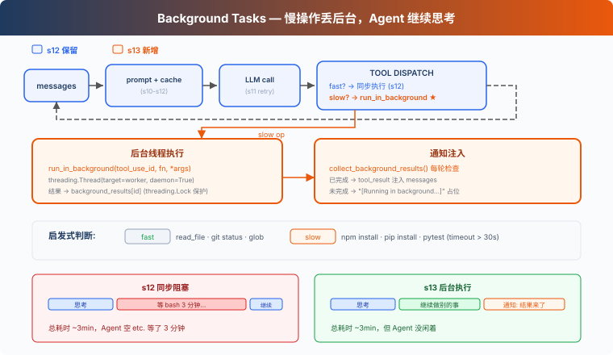
教学代码沿用 S12 的简化任务系统和 prompt 组装；为了聚焦后台任务，省略完整错误恢复、记忆和技能系统。唯一的变动：慢操作扔到后台线程，Agent 继续跑循环，后台完成后把通知注入到对话里。
同步 vs 后台：
| 同步 (12) | 后台 (13) | |
|---|---|---|
| 慢操作 | Agent 干等 | 后台线程执行 |
| Agent 空闲 | 是 | 否，继续处理 |
| 结果 | 立即返回 | 下轮注入通知 |
| 判断标准 | — | run_in_background 参数（模型显式请求），启发式兜底 |
工作原理
should_run_background: 显式请求优先，启发式兜底
模型通过 bash 工具的 run_in_background
参数显式请求后台执行。如果模型没指定，教学版用关键词启发式兜底：
代码
def is_slow_operation(tool_name: str, tool_input: dict) -> bool:
"""Fallback heuristic: commands likely to take > 30s."""
if tool_name != "bash":
return False
cmd = tool_input.get("command", "").lower()
slow_keywords = ["install", "build", "test", "deploy", "compile",
"docker build", "pip install", "npm install",
"cargo build", "pytest", "make"]
return any(kw in cmd for kw in slow_keywords)
def should_run_background(tool_name: str, tool_input: dict) -> bool:
"""Model explicit request takes priority; fallback to heuristic."""
if tool_input.get("run_in_background"):
return True
return is_slow_operation(tool_name, tool_input)CC 的 bash 工具 schema 里有 run_in_background: boolean
参数（BashTool.tsx:241）。模型自己决定哪些命令丢后台，不靠关键词猜。教学版保留启发式作为兜底，但主路径是模型显式请求。
start_background_task: 后台执行与生命周期
把工具调用包装成 worker 函数，扔到 daemon
线程里执行。每个后台任务有唯一 ID，状态存在
background_tasks 字典里：
代码
_bg_counter = 0
background_tasks: dict[str, dict] = {} # bg_id → {tool_use_id, command, status}
background_results: dict[str, str] = {} # bg_id → output
background_lock = threading.Lock()
def start_background_task(block) -> str:
"""Run tool in a daemon thread. Returns background task ID."""
global _bg_counter
_bg_counter += 1
bg_id = f"bg_{_bg_counter:04d}"
def worker():
result = execute_tool(block)
with background_lock:
background_tasks[bg_id]["status"] = "completed"
background_results[bg_id] = result
with background_lock:
background_tasks[bg_id] = {
"tool_use_id": block.id,
"command": block.input.get("command", ""),
"status": "running",
}
thread = threading.Thread(target=worker, daemon=True)
thread.start()
return bg_id返回 bg_id 而不是只返回
[Running in background...]。daemon=True 确保
Agent 进程退出时线程跟着退出。教学版用内存字典追踪状态；真实 CC 有
LocalShellTaskState，输出重定向到文件，支持停止任务、读取后续输出等完整生命周期。
collect_background_results: 通知收集
后台任务完成后，收集结果并格式化为
<task_notification> 通知：
代码
def collect_background_results() -> list[str]:
"""Collect completed results as task_notification messages."""
with background_lock:
ready_ids = [bid for bid, task in background_tasks.items()
if task["status"] == "completed"]
notifications = []
for bg_id in ready_ids:
with background_lock:
task = background_tasks.pop(bg_id)
output = background_results.pop(bg_id, "")
notifications.append(
f"<task_notification>\n"
f" <task_id>{bg_id}</task_id>\n"
f" <status>completed</status>\n"
f" <command>{task['command']}</command>\n"
f" <summary>{output[:200]}</summary>\n"
f"</task_notification>")
return notifications通知不复用原始 tool_use_id。原始 tool call 已经用占位
tool_result 回复了，后台完成是独立事件，用
task_notification 格式注入。这符合 Messages API
的工具配对语义：一个 tool_use 只对应一个
tool_result。
循环中的集成
agent_loop 里，工具执行分两条路，通知和结果合并为一条 user 消息：
代码
results = []
for block in response.content:
if block.type != "tool_use":
continue
if should_run_background(block.name, block.input):
bg_id = start_background_task(block)
results.append({"type": "tool_result",
"tool_use_id": block.id,
"content": f"[Background task {bg_id} started] "
f"Result will be available when complete."})
else:
output = execute_tool(block)
results.append({"type": "tool_result",
"tool_use_id": block.id, "content": output})
# 通知和工具结果合入同一条 user 消息
user_content = []
bg_notifications = collect_background_results()
if bg_notifications:
for notif in bg_notifications:
user_content.append({"type": "text", "text": notif})
user_content.extend(results)
messages.append({"role": "user", "content": user_content})慢操作先回一个带 bg_id 的占位 tool_result，LLM
知道这个命令还在跑，可以先做别的事。后台完成后，通知作为独立 text block
和当前轮的 tool_result 一起组成 user 消息。
教学版在 agent loop 继续运行时轮询后台结果。真实 CC
通过通知队列（messageQueueManager.ts）把后台完成事件送入后续
turn，不需要等工具循环。
合起来跑
代码
Turn 1:
LLM → bash "npm install" (run_in_background=true)
→ start_background_task → bg_0001
→ tool_result: "[Background task bg_0001 started]..."
→ LLM: "OK, I'll check later. Let me also read the config."
Turn 2:
LLM → read_file "package.json" (fast, sync)
→ tool_result: file content
→ collect: bg_0001 done! inject <task_notification>
→ LLM sees: config file + install notification in one messageAgent 没干等，npm install 跑后台的时候，它去读了配置文件。
相对 12 的变更
| 组件 | 之前 (12) | 之后 (13) |
|---|---|---|
| 执行模型 | 全部同步 | 慢操作后台线程 + 通知注入 |
| bash schema | command |
command + run_in_background |
| 新函数 | — | should_run_background, is_slow_operation,
start_background_task,
collect_background_results |
| 新类型 | — | background_tasks: dict,
background_results: dict,
background_lock: Lock |
| 通知格式 | — | <task_notification>（不复用 tool_use_id） |
| 循环行为 | 工具串行执行 | 慢操作异步，快操作同步，通知每轮收集 |
| 工具 | 8 (12) | 8（不变，执行策略变了） |
接下来
后台任务解决了"慢操作不阻塞"。但如果想定时做某件事呢？比如"每天早上 9 点跑测试"、"每 5 分钟检查一次服务器状态"。
14 Cron Scheduler → 给 Agent 装一个闹钟。
深入 CC 源码
以下基于 CC 源码
query.ts（211, 1054-1060, 1411-1482 行）、services/toolUseSummary/toolUseSummaryGenerator.ts（L15 prompt 文本）、LocalShellTask.tsx（L24-25 常量, L59-98 看门狗逻辑）、messageQueueManager.ts（通知队列）、utils/task/framework.ts（L267enqueueTaskNotification）的完整分析。
一、pendingToolUseSummary：Haiku 后台生成
CC 在每批工具执行完后，启动一个 Haiku side-query
生成工具使用摘要。发起代码在 query.ts:1411-1482，prompt
文本定义在
services/toolUseSummary/toolUseSummaryGenerator.ts:15（变量名
TOOL_USE_SUMMARY_SYSTEM_PROMPT）。提示是 "Write a short
summary label... think git-commit-subject, not sentence"，过去时态，约
30 字符。
Haiku 摘要（~1s）在主模型流式生成（5-30s）期间完成。下一轮开始前，把摘要 yield 出去。SDK 消费这些摘要做移动端进度展示。
二、线程模型：没有真正的线程
CC 运行在 Node.js/Bun 单线程事件循环中。"后台"只是 "不
await"。ShellCommand.background(taskId) 把 stdout/stderr
重定向到文件，让进程独立运行。
三、七种后台任务类型
CC 定义了 7
种后台任务（Task.ts:7-13）：local_bash、local_agent、remote_agent、in_process_teammate、local_workflow、monitor_mcp、dream。每种有自己的注册、生命周期和通知机制。
四、通知注入：命令队列
后台任务完成后通过
enqueueTaskNotification（utils/task/framework.ts:267）或
enqueuePendingNotification（messageQueueManager.ts）入队到共享命令队列。通知格式是结构化的
XML：
代码
<task_notification>
<status>completed</status>
<summary>Background command "npm test" completed (exit code 0)</summary>
</task_notification>优先级分 next >
later（messageQueueManager.ts）。后台任务默认
later（不阻塞用户输入）。消费点在
query.ts:1566-1593。
五、停滞看门狗
后台 bash 任务有一个看门狗（LocalShellTask.tsx L24-25
常量, L59-98 逻辑），定期检查输出是否停滞，45
秒无增长后检测交互式提示（(y/n)
等），防止后台任务卡在无人响应的交互式对话框。
六、并发限制
前台工具调用：CLAUDE_CODE_MAX_TOOL_USE_CONCURRENCY（默认
10 个并发安全工具）。后台 bash
任务：没有硬性限制，它们是独立的子进程。
14: Cron Scheduler — 按时间表生产工作
"按时间表生产工作, 调度与执行解耦" — cron 调度, 持久化或会话级。
Harness 层: 调度 — 独立线程判断时间, 队列传递触发。
问题
闹钟不需要你盯着它才会响。你设好 7:00，到点它自己响，你在睡觉、在洗澡、在做饭，它都照响不误。
13 让 Agent 能后台执行慢操作，但所有操作仍然是你手动触发的。你说一句，Agent 动一下。"每天早上 9 点跑测试"、"每 30 分钟检查 CI 状态"，这些周期性任务不该需要人每次来推。
解决方案
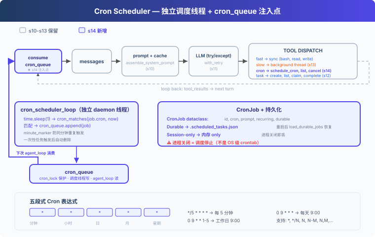
教学代码沿用 S13 的简化任务系统、后台执行和 prompt
组装；为了聚焦调度器，省略完整错误恢复、记忆和技能系统。新增：独立的
cron 调度线程，每秒检查一次，时间到了把任务塞进
cron_queue；再由 queue processor 在 Agent
空闲时自动交付。
手动 vs 定时：
| 手动触发 (13) | 定时触发 (14) | |
|---|---|---|
| 触发者 | 用户输入 | 调度线程 |
| 触发时机 | 随时 | cron 表达式指定 |
| 需要人参与 | 是 | 否（调度器自动入队，空闲时自动交付） |
| 持久性 | — | durable 跨重启 |
工作原理
四层模型
Cron 调度分四层：
- Scheduler：daemon 线程，每秒轮询，判断时间到了没有
- Queue：
cron_queue，调度线程写入已触发任务 - Queue Processor：发现队列非空且 Agent 空闲，启动一轮 agent_loop
- Consumer：agent_loop 从队列消费，注入到 messages
教学版实现的是最小 queue processor：用 agent_lock 判断
Agent 是否空闲，空闲时自动交付定时任务。真实 CC 的
useQueueProcessor.ts 还会处理 UI
阻塞、队列优先级和不同消息模式。
CronJob: 数据结构
每个 cron 任务是一个 CronJob 对象：
代码
@dataclass
class CronJob:
id: str
cron: str # "0 9 * * *" (五段式 cron 表达式)
prompt: str # 触发时注入给 Agent 的消息
recurring: bool # True=周期性，False=一次性
durable: bool # True=写磁盘，跨会话保留Cron 表达式，五段式，Unix 用了 50 年：
代码
分钟 小时 日 月 星期
* * * * * 每分钟
0 9 * * * 每天早上 9:00
*/5 * * * * 每 5 分钟
0 9 * * 1-5 工作日早上 9:00支持
*、*/N、N、N-M、N,M,...。
cron_matches: 五段式匹配
标准 cron 语义：分钟、小时、月必须全部匹配；日（DOM）和星期（DOW）同时被约束时任一匹配即可（OR）：
代码
def cron_matches(cron_expr: str, dt: datetime) -> bool:
fields = cron_expr.strip().split()
if len(fields) != 5:
return False
minute, hour, dom, month, dow = fields
dow_val = (dt.weekday() + 1) % 7 # Python Monday=0 → cron Sunday=0
m = _cron_field_matches(minute, dt.minute)
h = _cron_field_matches(hour, dt.hour)
dom_ok = _cron_field_matches(dom, dt.day)
month_ok = _cron_field_matches(month, dt.month)
dow_ok = _cron_field_matches(dow, dow_val)
if not (m and h and month_ok):
return False
# DOM and DOW: both constrained → either matching is enough (OR)
dom_unconstrained = dom == "*"
dow_unconstrained = dow == "*"
if dom_unconstrained and dow_unconstrained:
return True
if dom_unconstrained:
return dow_ok
if dow_unconstrained:
return dom_ok
return dom_ok or dow_ok独立调度线程: 每秒轮询
调度器跑在独立的 daemon 线程里，不依赖 agent_loop 是否在执行。单个 job 异常不会杀掉整个线程：
代码
def cron_scheduler_loop():
while True:
time.sleep(1)
now = datetime.now()
minute_marker = now.strftime("%Y-%m-%d %H:%M")
with cron_lock:
for job in list(scheduled_jobs.values()):
try:
if cron_matches(job.cron, now):
if _last_fired.get(job.id) != minute_marker:
cron_queue.append(job)
_last_fired[job.id] = minute_marker
if not job.recurring:
scheduled_jobs.pop(job.id, None)
if job.durable:
save_durable_jobs()
except Exception as e:
print(f"[cron error] {job.id}: {e}")关键设计：
- 独立于 agent_loop：即使 agent_loop 没在跑，调度器也在后台检查时间
- date-aware minute_marker：用
"YYYY-MM-DD HH:MM"防止同一分钟重复触发，同时不会在第二天跳过 - 单 job try/except：一个坏 job 不会拖垮整个调度线程
- 一次性任务：触发后自动从 scheduled_jobs 里删除
Queue Processor + agent_loop: 交付端
queue processor 不检查时间，只负责在队列有任务且 Agent 空闲时拉起一轮执行：
代码
def queue_processor_loop():
while True:
time.sleep(0.2)
if not has_cron_queue():
continue
if not agent_lock.acquire(blocking=False):
continue
try:
if has_cron_queue():
run_agent_turn_locked()
finally:
agent_lock.release()agent_loop 也不负责检查时间，它只从 cron_queue
里拿已触发的任务，注入到 messages 里：
代码
fired = consume_cron_queue()
for job in fired:
messages.append({"role": "user",
"content": f"[Scheduled] {job.prompt}"})生产者（调度线程）、交付者（queue
processor）和消费者（agent_loop）通过
cron_queue、cron_lock、agent_lock
解耦。
校验：防止坏 cron 杀掉调度器
schedule_job 在注册前校验 cron
表达式，非法的直接返回错误：
代码
def schedule_job(cron, prompt, recurring=True, durable=True):
err = validate_cron(cron)
if err:
return err
# ... register job从磁盘加载 durable job 时也会跳过非法表达式，避免单个坏任务拖垮启动。
Durable vs Session-only
- Durable：任务定义写进
.scheduled_tasks.json。Agent 重启后加载文件，恢复任务。 - Session-only：只在内存里。Agent 关闭就没了。
重要前提：cron 调度器必须在 Agent 进程内跑。进程关闭，调度也停。Durable 只意味着任务定义跨重启保留，下次 Agent 启动时调度器才会发现"该触发了"并触发。如果需要"即使应用关闭也能定时跑"，请用系统 crontab 或 systemd timer。
合起来跑
代码
1. 启动时：
load_durable_jobs() → 从 .scheduled_tasks.json 恢复持久化任务
Thread(cron_scheduler_loop, daemon=True).start() → 调度线程开始轮询
Thread(queue_processor_loop, daemon=True).start() → 队列处理器等待交付
2. 注册任务：
schedule_cron(cron="*/2 * * * *", prompt="run date", durable=True)
→ CronJob 写入 scheduled_jobs + .scheduled_tasks.json
3. 每 2 分钟：
调度线程检查 → cron_matches 返回 True → cron_queue.append(job)
→ queue processor 发现 Agent 空闲 → agent_loop consume_cron_queue
→ 注入 "[Scheduled] run date"
→ LLM 收到消息，执行 date 命令
4. 关闭进程：
调度线程跟着停（daemon=True）
.scheduled_tasks.json 还在磁盘上
下次启动 → load_durable_jobs → 任务恢复相对 13 的变更
| 组件 | 之前 (13) | 之后 (14) |
|---|---|---|
| 触发方式 | 用户手动触发 | 调度线程自动入队 |
| 新类型 | — | CronJob dataclass (id, cron, prompt, recurring, durable) |
| 新函数 | — | cron_matches, validate_cron, schedule_job, cancel_job, cron_scheduler_loop, queue_processor_loop |
| 新存储 | — | .scheduled_tasks.json (durable) + 内存 (session-only) |
| 线程 | 后台执行线程 | + 调度线程 (daemon, 1s 轮询) + queue processor 线程 |
| 队列 | background_results | + cron_queue (调度线程写, queue processor 交付, agent_loop 消费) |
| 工具 | 8 (12/13) | + schedule_cron, list_crons, cancel_cron (11) |
接下来
一个 Agent 能做很多事了，能计划、能压缩、能后台、能定时。但有些任务太大了，不是一个 Agent 能搞定的。
"重构整个后端"，把认证模块、数据库层、API 路由、测试全部翻新。一个 Agent 的注意力是有限的，这需要一个团队。
15 Agent Teams → 一个 Agent 不够，组队吧。持久队友 + 异步收件箱。
深入 CC 源码
以下基于 CC 源码
CronCreateTool.ts、cronScheduler.ts、cron.ts、cronTasks.ts、cronTasksLock.ts、useScheduledTasks.ts（139 行）的完整分析。
一、三个 Cron 工具
CC 暴露了三个 cron
工具给模型：CronCreate、CronDelete、CronList。全部由编译时门控
feature('AGENT_TRIGGERS') 和运行时 GrowthBook 标志
tengu_kairos_cron 控制。还有一个
CLAUDE_CODE_DISABLE_CRON 环境变量做本地覆盖。
二、存储：.claude/scheduled_tasks.json
代码
{ "tasks": [{ "id": "abc12345", "cron": "0 9 * * *", "prompt": "...", "recurring": true, "durable": true, "createdAt": 1714567890000 }] }Durable 任务写磁盘；session-only 任务存于
STATE.sessionCronTasks 内存数组（进程重启丢失）。还有一个
.scheduled_tasks.lock 文件防止同项目的多个 session
重复触发。
三、调度器：1 秒轮询
cronScheduler.ts
每秒检查一次（CHECK_INTERVAL_MS = 1000）。谁持有锁谁触发文件任务；所有
session 都触发仅 session 任务。还有一个 chokidar
文件观察者监视 scheduled_tasks.json 变更。
四、Cron 表达式：标准 5 字段
分钟 小时 日 月 星期。支持
*、*/N、N、N-M、N-M/S、N,M,...。不支持
L、W、?。所有时间以本地时区解释。Day-of-month
和 day-of-week 同时约束时用 OR 语义。
五、抖动（防惊群效应）
- 重复性任务：触发延迟最多可达期间的 10%（上限 15 分钟），基于任务 ID 的确定性哈希
- 一次性任务：当触发时间落在
:00或:30时，最多提前 90 秒触发 - 抖动配置可通过 GrowthBook 实时调整，60 秒刷新一次
六、自动过期
重复性任务 7 天后自动过期（可配置，上限 30 天）。过期前最后一次触发，触发后自动删除。
七、作业数上限
MAX_JOBS = 50（CronCreateTool.ts:25）。超限时返回错误："Too
many scheduled jobs (max 50). Cancel one first."
八、触发注入
触发后通过 enqueuePendingNotification() 以
priority: 'later' 入队命令队列。标记
workload: WORKLOAD_CRON，API 在容量紧张时以更低的 QoS 为
cron 发起的请求服务。
九、Queue Processor：自动交付
真实 CC 通过 useQueueProcessor.ts:48-60 在无
query、无阻塞
UI、队列非空时自动触发处理。queueProcessor.ts:52-87
按队列优先级把命令交给 handlePromptSubmit()。教学版用
queue_processor_loop 保留核心行为：队列有任务且 Agent
空闲时，自动启动一轮 agent_loop。
15: Agent Teams — 一个搞不定，组队来
"一个搞不定, 组队来" — 文件收件箱 + 队友线程。
Harness 层: 团队 — 多 Agent 协作, 消息总线。
问题
"重构整个后端"涉及认证模块、数据库层、API 路由、测试。一个 Agent 在修 API 路由时，认证模块的细节已经不在上下文里了。上下文窗口就那么大，单个 Agent 的注意力覆盖不了所有模块。
06 的子 Agent 是临时工，叫来干一件事就走了。但有些任务需要能通信、能协作的队友。
解决方案
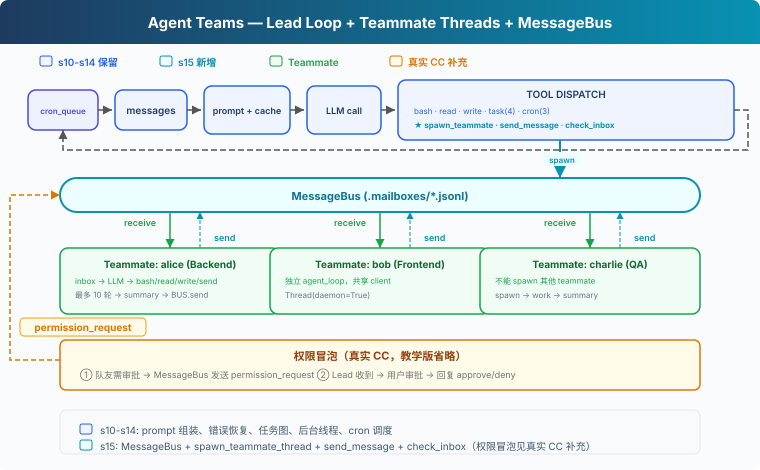
教学代码沿用 S14 的能力（prompt 组装、任务系统、后台执行、cron 调度）。为了聚焦团队机制，省略了完整错误恢复、记忆和技能系统。新增三样：MessageBus（文件收件箱）、spawn_teammate_thread（启动队友线程）、inbox 注入（Lead 接收队友消息并注入 history）。
子 Agent vs 队友：
| 06 子 Agent | 15 队友 | |
|---|---|---|
| 生命周期 | 一次性，用完销毁 | 多轮（教学版限 10 轮，真实 CC 用 idle loop） |
| 通信 | 只回传结论 | 异步收件箱，随时通信 |
| 上下文 | 完全隔离 | 通过消息共享信息 |
| 数量 | 一个主 Agent + 偶尔子 Agent | 一个 Lead + 多个队友 |
工作原理
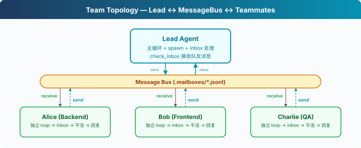
MessageBus: 文件收件箱
每个 Agent（包括 Lead 和队友）有一个 .jsonl 邮箱。发消息
= 往对方的文件里 append 一行 JSON。读消息 = 读文件 +
删除（消费式）：
代码
class MessageBus:
def send(self, from_agent: str, to_agent: str,
content: str, msg_type: str = "message"):
msg = {"from": from_agent, "to": to_agent,
"content": content, "type": msg_type,
"ts": time.time()}
inbox = MAILBOX_DIR / f"{to_agent}.jsonl"
with open(inbox, "a") as f:
f.write(json.dumps(msg) + "\n")
def read_inbox(self, agent: str) -> list[dict]:
inbox = MAILBOX_DIR / f"{agent}.jsonl"
if not inbox.exists():
return []
msgs = [json.loads(line) for line in inbox.read_text().splitlines()]
inbox.unlink() # 消费式：读完删除
return msgs为什么用文件而不是内存队列？教学版选文件是因为直观、跨线程可观察。真实
CC
也用文件收件箱（~/.claude/teams/{team}/inboxes/），但加了
proper-lockfile 防并发写冲突。教学版的
read_inbox 有 read + unlink
竞态，多线程同时读可能丢消息，对教学场景可以接受。
spawn_teammate_thread: 启动队友
Lead 调用 spawn_teammate
工具启动一个队友。队友跑在自己的 daemon 线程里，有自己的 system
prompt、自己的 messages、自己的简化工具集：
代码
def spawn_teammate_thread(name: str, role: str, prompt: str) -> str:
system = f"You are '{name}', a {role}. Use tools to complete tasks."
def run():
messages = [{"role": "user", "content": prompt}]
sub_tools = [bash, read_file, write_file, send_message]
for _ in range(10): # 最多 10 轮
inbox = BUS.read_inbox(name)
if inbox:
messages.append({"role": "user",
"content": f"<inbox>{json.dumps(inbox)}</inbox>"})
response = client.messages.create(
model=MODEL, system=system, messages=messages[-20:],
tools=sub_tools, max_tokens=8000)
# ... 执行工具、处理结果
# 完成后发 summary 给 Lead
BUS.send(name, "lead", summary, "result")
threading.Thread(target=run, daemon=True).start()关键设计：
- 队友有简化工具集：bash、read、write、send_message。教学版省略了任务和 cron，聚焦通信机制。真实 CC 的队友也有 TaskCreate、TaskUpdate 等工具，任务系统是团队共享的
- 教学版限 10 轮：防止队友无限循环。真实 CC 用 idle
loop：跑完一轮后发
idle_notification，等 inbox 消息，收到后继续，直到shutdown_request才退出 - 完成后自动汇报：
BUS.send(name, "lead", summary)把最终结果发到 Lead 的收件箱
Lead 的 inbox 注入
Lead 在每轮主循环结束后检查收件箱。队友发来的消息注入到 history 里，让 LLM 能看到并做出反应：
代码
# 主循环结束后
inbox = BUS.read_inbox("lead")
if inbox:
inbox_text = "\n".join(
f"From {m['from']}: {m['content'][:200]}" for m in inbox)
history.append({"role": "user",
"content": f"[Inbox]\n{inbox_text}"})教学版在用户输入循环外注入。CC 更精细，Lead 的
useInboxPoller 每 1 秒检查一次，有消息就提交为新的
turn，不需要等用户输入。
权限冒泡
教学版省略了权限冒泡。真实 CC
的流程（permissionSync.ts、useSwarmPermissionPoller.ts）：
- 队友遇到需要审批的操作 → 发
permission_request到 Lead 收件箱 - Lead 的
useInboxPoller检测到请求 → 路由到审批队列 - 用户审批后 → Lead 发
permission_response回队友 - 队友的
useSwarmPermissionPoller（每 500ms 轮询）收到回复 → 继续或拒绝
合起来跑
代码
1. Lead: "搭建后端：一个人搞不定，组队吧"
2. Lead → spawn_teammate("alice", "backend dev", "创建数据库 schema")
3. Lead → spawn_teammate("bob", "frontend dev", "写 API 客户端")
4. alice 线程启动 → 自己的 LLM 调用 → bash "python manage.py migrate"
5. bob 线程启动 → 自己的 LLM 调用 → write_file("client.ts", ...)
6. alice 完成 → BUS.send("alice", "lead", "Schema done: users, orders tables")
7. bob 完成 → BUS.send("bob", "lead", "Client written with types")
8. Lead 下次循环 → inbox 注入 history → LLM 看到 alice 和 bob 的结果两个队友并行工作。
相对 14 的变更
| 组件 | 之前 (14) | 之后 (15) |
|---|---|---|
| Agent 数量 | 1 | 1 Lead + N 队友线程 |
| 通信 | 无 | MessageBus + .mailboxes/*.jsonl |
| 新类 | — | MessageBus, active_teammates dict |
| 新函数 | — | spawn_teammate_thread, run_send_message, run_check_inbox |
| Lead 工具 | 11 (14) | + spawn_teammate, send_message, check_inbox (14) |
| 队友工具 | — | bash, read_file, write_file, send_message (4) |
| 权限 | 本地决策 | 教学版省略（真实 CC 有冒泡机制） |
接下来
队友能干活、能通信。但如果 Lead 想让 Alice 关机，直接杀线程会留下写到一半的文件。需要一个体面的关机协议：Lead 发 shutdown_request，队友收尾后退出。
16 Team Protocols → 关机握手与消息约定。
深入 CC 源码
以下基于 CC 源码
spawnMultiAgent.ts、useInboxPoller.ts（969 行）、useSwarmPermissionPoller.ts（330 行）、teammateMailbox.ts、teamHelpers.ts的完整分析。
一、没有中央消息总线，是文件系统
教学版用 MessageBus 类收发消息。CC 的做法更直接，每个
Agent 直接写其他 Agent 的收件箱文件。
收件箱路径：~/.claude/teams/{teamName}/inboxes/{agentName}.json
写入时用 proper-lockfile 文件锁保证并发安全（最多重试 10
次）。每个文件是一个 JSON 数组，append 新消息时读→追加→写回。
二、15 种消息类型
CC 的团队通信有 15
种结构化消息（teammateMailbox.ts）：
| 类型 | 方向 | 用途 |
|---|---|---|
plain text |
双向 | 普通队友间通信 |
idle_notification |
队友→Lead | 队友完成一轮工作，进入空闲 |
permission_request |
队友→Lead | 队友需要操作审批 |
permission_response |
Lead→队友 | Lead 审批结果 |
plan_approval_request |
队友→Lead | 队友提交计划待审 |
plan_approval_response |
Lead→队友 | Lead 审批计划 |
shutdown_request |
Lead→队友 | 请求体面关机 |
shutdown_approved |
队友→Lead | 确认关机 |
shutdown_rejected |
队友→Lead | 拒绝关机（附原因） |
task_assignment |
Lead→队友 | 分配任务 |
team_permission_update |
Lead→队友 | 广播权限变更 |
mode_set_request |
Lead→队友 | 修改队友的权限模式 |
sandbox_permission_* |
双向 | 网络权限请求/回复 |
teammate_terminated |
系统 | 队友被移除通知 |
文本消息被包装在 <teammate-message> XML
标签中交付给模型。
三、权限冒泡：双向轮询
教学版省略了权限冒泡。CC
的实际流程（permissionSync.ts）：
- 队友遇到需要审批的操作 → 发
permission_request到 Lead 的收件箱 - Lead 的
useInboxPoller（每 1 秒轮询）检测到请求 → 路由到ToolUseConfirmQueue - Lead 的 UI 显示审批对话框，带队友名字和颜色
- 用户审批后 → Lead 发
permission_response回队友的收件箱 - 队友的
useSwarmPermissionPoller（每 500ms 轮询）收到回复 → 继续或拒绝执行
四、队友生命周期
CC 的队友由
spawnTeammate()（spawnMultiAgent.ts）创建：
- Spawn：创建 tmux 窗格（或进程内），分配颜色，写入 team config
- Work：
useInboxPoller每 1 秒检查收件箱 → 有消息就提交为新的 turn - Idle：Stop hook 触发 → 发
idle_notification给 Lead - Shutdown：Lead 发
shutdown_request→ 队友回复shutdown_approved→ Lead 清理
五、Team Config
团队注册表在
~/.claude/teams/{teamName}/config.json（teamHelpers.ts）：
代码
{
"name": "my-team",
"leadAgentId": "lead@my-team",
"members": [{
"agentId": "researcher@my-team",
"name": "researcher",
"agentType": "general-purpose",
"color": "blue",
"isActive": true
}]
}队友之间不能嵌套（AgentTool.tsx:273 明确禁止 "teammates
spawning other teammates"）。
16: Team Protocols — 队友之间要有约定
"队友之间要有约定" — request-response 模式驱动协商。
Harness 层: 协议 — Agent 之间的结构化握手。
问题
15 的队友能干活了，但协调是松散的：Lead 发消息，队友回复，没有结构化的协议。两个场景暴露了问题：
关机：Lead 想让 Alice 关机。直接杀线程，Alice 写了一半的文件留在磁盘上。需要握手：Lead 发请求，Alice 确认收尾后关机。
计划审批：Bob 想重构认证模块，属于高风险操作。应该先让 Lead 看 Bob 的计划，审批通过后再动手。
这两个场景结构完全一样：一方发请求，另一方给回复，请求和回复通过同一个 ID 关联。有状态机追踪：pending → approved / rejected。
解决方案
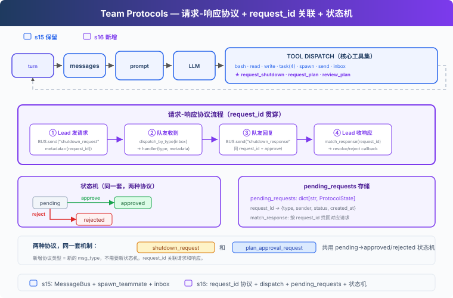
教学代码承接前面章节的 Agent 能力脉络，在 S15 团队通信基础上加入结构化协议。为了聚焦协议机制，省略了完整错误恢复、记忆和技能系统。新增三样：ProtocolState（请求状态追踪）、dispatch_message（按消息类型路由到处理器）、match_response（通过 request_id 关联回复与请求，含类型校验）。
两种协议，一套机制：
| 协议 | 方向 | 用途 |
|---|---|---|
| shutdown_request / response | Lead → 队友 | 体面关机握手 |
| plan_approval_request / response | 队友 → Lead | 计划审批协议示例 |
教学版演示了计划审批的请求-响应消息流程，没有实现执行门控（未 approved 时拦截 bash/write_file）。真实 CC 的队友有 permission gating 机制。
工作原理
ProtocolState: 请求状态
每个协议请求创建一条状态记录，记录谁发的、发给谁、当前状态、附带内容：
代码
@dataclass
class ProtocolState:
request_id: str # 唯一 ID，如 "req_004281"
type: str # "shutdown" | "plan_approval"
sender: str # 发起方
target: str # 接收方
status: str # pending | approved | rejected
payload: str # 计划文本或关机原因
created_at: float # 时间戳
pending_requests: dict[str, ProtocolState] = {}发请求时创建记录，收回复时通过 request_id
找到对应记录，更新状态。
四步协议流程
以关机为例，完整链路：
代码
① Lead 发请求
req_id = new_request_id() # "req_004281"
pending_requests[req_id] = ProtocolState(type="shutdown", status="pending", ...)
BUS.send("lead", "alice", "shutdown_request", metadata={"request_id": req_id})
② 队友收到 → dispatch
inbox = BUS.read_inbox("alice")
msg_type = msg["type"] # "shutdown_request"
→ 路由到 handle_shutdown_request()
③ 队友回复
BUS.send("alice", "lead", "shutdown_response",
metadata={"request_id": req_id, "approve": True})
④ Lead 收响应 → match
match_response("shutdown_response", req_id, approve=True)
pending_requests[req_id].status = "approved"request_id
是贯穿全链路的关联键，请求带着它出去，回复带着它回来。
教学版用
shutdown_response统一命名（approve 字段区分同意/拒绝）。真实源码拆成shutdown_approved和shutdown_rejected两种独立消息类型（teammateMailbox.ts:720-763）。
dispatch_message: 按类型路由
队友的 inbox
不只收普通消息，还收协议消息。handle_inbox_message
按消息类型分发：
代码
def handle_inbox_message(name, msg, messages):
msg_type = msg.get("type", "message")
req_id = msg.get("metadata", {}).get("request_id", "")
if msg_type == "shutdown_request":
BUS.send(name, "lead", "Shutting down.", "shutdown_response",
{"request_id": req_id, "approve": True})
return True # 停止循环
if msg_type == "plan_approval_response":
approve = msg["metadata"].get("approve", False)
messages.append({"role": "user",
"content": "[Plan approved]" if approve else "[Plan rejected]"})
return False # 继续循环新增协议类型只需加新的 if 分支。
match_response: 类型校验
match_response 不只按 request_id
找状态，还会校验响应类型是否匹配请求类型：
代码
def match_response(response_type, request_id, approve):
state = pending_requests.get(request_id)
if not state:
return
if state.type == "shutdown" and response_type != "shutdown_response":
return # type mismatch, skip
if state.type == "plan_approval" and response_type != "plan_approval_response":
return
if state.status != "pending":
return # already resolved, skip duplicate
state.status = "approved" if approve else "rejected"一个 shutdown_response 不会意外 approve 一个 plan_approval 请求。
统一 inbox 消费：consume_lead_inbox
check_inbox 工具和主循环末尾都调用同一个
consume_lead_inbox()
函数，先路由协议消息再返回剩余内容，避免消息被读走但协议状态没更新：
代码
def consume_lead_inbox(route_protocol=True) -> list[dict]:
msgs = BUS.read_inbox("lead")
if route_protocol:
for msg in msgs:
meta = msg.get("metadata", {})
req_id = meta.get("request_id", "")
msg_type = msg.get("type", "")
if req_id and msg_type.endswith("_response"):
match_response(msg_type, req_id, meta.get("approve", False))
return msgs主循环末尾还会把 inbox 消息注入到 history，让 LLM
能看到并做出反应。
队友 idle loop：等待而不是退出
15 的队友跑完 10 轮就退出。16 的队友在 LLM 返回非 tool_use 后进入 idle 等待：轮询 inbox，收到 shutdown_request 就响应退出，收到新消息就继续工作。
代码
LLM 返回非 tool_use
→ idle: 每秒轮询 inbox
→ 收到 shutdown_request → 回复 shutdown_response → 退出
→ 收到新消息 → 注入 messages → 继续 LLM turn教学版省略了 idle_notification 给 Lead 的通知。真实 CC 在 idle 时发
idle_notification，Lead
收到后知道队友空闲，可以分配新任务。
合起来跑
代码
1. Lead: "让 Alice 创建一个文件，然后关机"
2. Lead → spawn_teammate("alice", "backend", "创建 config.py")
3. alice 线程启动 → write_file("config.py", "...") → 完成 → idle
4. Lead → request_shutdown("alice")
→ BUS.send("shutdown_request", {request_id: "req_000142"})
5. alice idle 轮询收到 → handle_shutdown_request
→ BUS.send("shutdown_response", {request_id: "req_000142", approve: True})
6. Lead consume_lead_inbox → match_response("req_000142", approve=True)
→ pending_requests["req_000142"].status = "approved"
→ inbox 消息注入 history，LLM 看到关机结果关机握手完整：请求 → 确认 → 关机。每一步有 request_id
追溯。
相对 15 的变更
| 组件 | 之前 (15) | 之后 (16) |
|---|---|---|
| 协调方式 | 松散文本消息 | 结构化请求-响应协议 |
| 请求追踪 | 无 | ProtocolState + pending_requests dict |
| 消息路由 | 全部当文本处理 | dispatch_message 按类型分发 |
| 关机 | 自然退出或杀线程 | request_id 握手机制 |
| 计划审批 | 无 | 消息流程示例（未实现执行门控） |
| 新消息类型 | message, result | + shutdown_request/response, plan_approval_request/response |
| 队友生命周期 | 最多 10 轮 | idle loop（等待 inbox 消息） |
| Lead inbox | check_inbox 和主循环分别读 | 统一 consume_lead_inbox |
| Lead 工具 | 14 (15) | 14（核心工具集加入 request_shutdown, request_plan, review_plan） |
| 队友工具 | 4 (15) | + submit_plan (5) |
接下来
15-16 中，Lead 必须给每个队友分配任务。"Alice 做这个，Bob 做那个"。任务看板上有 10 个未认领的任务，Lead 得手动 assign。
能不能让队友自己看板、自己认领？Lead 只需要创建任务，队友自己发现、自己认领、自己完成。
17 Autonomous Agents → 队友自组织，不需要领导分配。
深入 CC 源码
CC 的团队协议实现（teammateMailbox.ts，1184
行）和教学版在核心结构上一致：request_id + approve/reject
的请求-响应模式。差异在于：
关机协议：CC 的 shutdown
是三向通信（teammateMailbox.ts:720-763、SendMessageTool.ts:268-430）。Lead
发 shutdown_request，队友回复
shutdown_approved（或 shutdown_rejected
附原因），系统发送 teammate_terminated
通知所有相关方。关机确认后系统自动清理 pane（tmux/iTerm2）、unassign
任务、从 team config
移除成员（useInboxPoller.ts:677-800）。教学版用
shutdown_response 统一命名，真实源码拆成 approved/rejected
两种独立消息。
计划审批：真实源码里 plan approval request 由
ExitPlanModeV2Tool.ts:263-312 在 plan-mode-required
队友退出 plan mode 时产生。useInboxPoller.ts:599-661
当前会自动回写 approval，并把请求交给 Lead 作为上下文（regular
message）。SendMessageTool.ts:434-518 仍保留显式
approve/reject response 能力，审批时可同时设置
permissionMode（如"批准但以 plan mode 运行"），响应中可包含
feedback 字符串供队友修正后重新提交。不是简单的"Lead 手动
review_plan 工具"流程。
消息格式：CC 的协议消息是结构化的 JSON（有 Zod
schema 验证），教学版用简单的 type + metadata
字典。字段名也不统一：permission 用
request_id（teammateMailbox.ts:453-462），shutdown
和 plan approval 用
requestId（teammateMailbox.ts:684-763）。
执行门控：CC 的队友有完整的 permission gating。未获批准的高风险操作会被拦截，不是可选的。教学版只演示了消息流程，没有实现执行拦截。
通用性：教学版的一个 FSM（pending → approved | rejected）对应两种协议，这个简化完全正确。CC 的所有协议消息共用同一个 request id 关联机制。
17: Autonomous Agents — 自己看板，自己认领
"自己看板，自己认领" — 空闲时轮询，有活就干。
Harness 层: 自治 — 队友自组织，不依赖 Lead 分配。
问题
16 的队友能通信、能握手关机。但每个队友等 Lead 分配任务——如果任务看板上有 10 个未认领任务，Lead 得手动 assign 10 次。这不能扩展。队友应该自己看任务看板，发现没人做的任务就认领，做完再找下一个。
解决方案
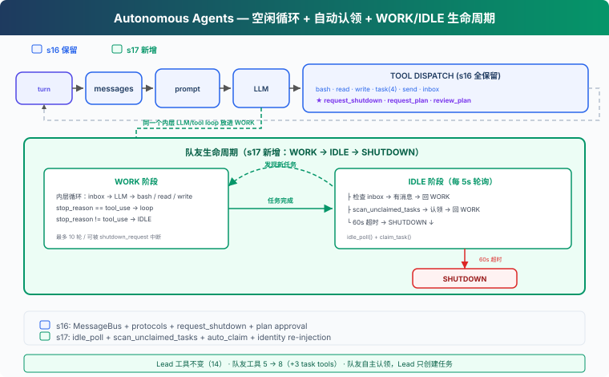
沿用 S16 的教学版 MessageBus 和协议工具。本章新增：idle_poll（空闲时每 5 秒轮询一次）、scan_unclaimed_tasks（扫描看板上可认领的任务）、自动认领（找到任务就 claim，不用 Lead 操心）。
队友生命周期从两阶段变成三阶段：
| 阶段 | 行为 | 退出条件 |
|---|---|---|
| WORK | inbox → LLM → 工具循环 | stop_reason != tool_use |
| IDLE | 每 5s 轮询 inbox + 任务板 | 60s 超时 |
| SHUTDOWN | 发 summary，退出 | — |
工作原理
idle_poll: 空闲轮询
队友完成当前任务后不退出，进入 IDLE 阶段——每 5 秒检查一次有没有新工作：
代码
IDLE_POLL_INTERVAL = 5 # seconds
IDLE_TIMEOUT = 60 # seconds
def idle_poll(agent_name, messages, name, role) -> str:
"""Return 'work', 'shutdown', or 'timeout'."""
for _ in range(IDLE_TIMEOUT // IDLE_POLL_INTERVAL):
time.sleep(IDLE_POLL_INTERVAL)
# ① 检查收件箱（优先）
inbox = BUS.read_inbox(agent_name)
if inbox:
# shutdown_request 立即处理
for msg in inbox:
if msg.get("type") == "shutdown_request":
# ... 回复 shutdown_response
return "shutdown"
# 普通消息注入上下文，回到 WORK
messages.append(...)
return "work"
# ② 扫描任务看板
unclaimed = scan_unclaimed_tasks()
if unclaimed:
task = unclaimed[0]
result = claim_task(task["id"], agent_name)
if "Claimed" in result:
messages.append(...)
return "work"
return "timeout"inbox 优先（可能包含 shutdown_request 等协议消息），任务板其次。IDLE 阶段收到 shutdown_request 会直接回复并退出，不等到下一轮 WORK。
scan_unclaimed_tasks: 扫描任务看板
找 pending 状态、无
owner、所有依赖已完成（can_start）的任务：
代码
def scan_unclaimed_tasks() -> list[dict]:
unclaimed = []
for f in sorted(TASKS_DIR.glob("task_*.json")):
task = json.loads(f.read_text())
if (task.get("status") == "pending"
and not task.get("owner")
and can_start(task["id"])):
unclaimed.append(task)
return unclaimed三个条件：必须是 pending、没有 owner、所有 blockedBy
依赖已完成。can_start
检查依赖任务的状态——有依赖不代表不能做，只有被未完成的任务阻塞才不能做。教学版按文件名排序取第一个；CC
用文件锁防止多个队友同时认领同一个任务。
claim_task: owner 检查
自动认领时检查 claim 结果，不把失败当成功：
代码
def claim_task(task_id: str, owner: str = "agent") -> str:
task = load_task(task_id)
if task.status != "pending":
return f"Task {task_id} is {task.status}, cannot claim"
if task.owner:
return f"Task {task_id} already owned by {task.owner}"
if not can_start(task_id):
return f"Blocked by: {deps}"
task.owner = owner
task.status = "in_progress"
save_task(task)
return f"Claimed {task.id} ({task.subject})"教学版没有文件锁，并发认领可能出现竞争。但至少
task.owner 检查避免了最明显的"后写覆盖"问题。CC 用
proper-lockfile 保护任务文件，claimTask
在文件锁内完成读-改-写（utils/tasks.ts:541-612）。
队友生命周期: WORK → IDLE → SHUTDOWN
16 的队友做完任务就退出。17 加了 IDLE 阶段，队友在外层循环中反复 WORK → IDLE：
代码
# Outer loop: WORK → IDLE cycle
while True:
# WORK phase: 内层循环（最多 10 轮 LLM 调用）
for _ in range(10):
# 检查 inbox、处理协议消息、调 LLM、执行工具
...
if response.stop_reason != "tool_use":
break # WORK 阶段结束
# IDLE phase
idle_result = idle_poll(name, messages, name, role)
if idle_result == "shutdown":
break
if idle_result == "timeout":
break # 60s 超时 → SHUTDOWN
# SHUTDOWN: 发 summary 给 Lead
BUS.send(name, "lead", summary, "result")关键设计：
- 外层 while True：WORK 和 IDLE 交替进行，直到超时或收到关机请求
- 内层 for 10：WORK 阶段最多 10 轮 LLM 调用（防止无限循环）
- IDLE 超时 60 秒：12 次轮询 × 5 秒 = 60 秒。超时后发送 summary 并退出
- shutdown_request 两阶段都能响应：WORK 阶段通过
handle_inbox_message分发；IDLE 阶段idle_poll直接检查并回复
身份重注入
autoCompact（08）之后，队友的 messages 列表可能被压缩成一段摘要。每次进入新的 WORK 阶段时检查：
代码
if len(messages) <= 3:
messages.insert(0, {"role": "user",
"content": f"<identity>You are '{name}', role: {role}. "
f"Continue your work.</identity>"})消息过短说明发生了压缩，此时重新注入身份信息。真实 CC 中 context compaction 会保留 system prompt，教学版的简化实现需要手动处理。
consume_lead_inbox: 统一 inbox 消费
check_inbox 工具和主循环末尾都调用同一个
consume_lead_inbox() 函数：先路由协议 response
更新状态，再把所有消息注入 Lead 的对话历史。队友发来的 summary/result
不会只打印在终端，Lead 的 LLM 能看到并协调下一步。
合起来跑
代码
1. Lead: "搭建后端——任务太多，让队友自己认领"
2. Lead → create_task("创建数据库 schema")
3. Lead → create_task("写 API 路由")
4. Lead → create_task("写单元测试")
5. Lead → spawn_teammate("alice", "backend", "你是后端开发者")
6. Lead → spawn_teammate("bob", "backend", "你是后端开发者")
7. alice 线程启动 → WORK: 没有初始 inbox → 空转 → IDLE
8. bob 线程启动 → WORK: 没有初始 inbox → 空转 → IDLE
9. alice IDLE 第 1 次轮询 → scan_unclaimed → 发现"创建数据库 schema"
10. alice → claim_task → "创建数据库 schema" → 回到 WORK
11. bob IDLE 第 1 次轮询 → scan_unclaimed → 发现"写 API 路由"
12. bob → claim_task → "写 API 路由" → 回到 WORK
13. alice WORK: write_file("schema.sql", ...) → complete_task → WORK 结束
14. alice IDLE → scan → "写单元测试" → claim → WORK
15. alice WORK: write_file("test_api.py", ...) → complete_task → WORK 结束
16. alice IDLE → 60s 无新任务 → SHUTDOWN
17. bob 类似流程 → 做完 → SHUTDOWN
18. Lead consume_lead_inbox → 看到 alice 和 bob 的 summary两个队友并行认领、并行工作。Lead 只需要创建任务和启动队友，不需要手动分配。
相对 16 的变更
| 组件 | 之前 (16) | 之后 (17) |
|---|---|---|
| 任务分配 | Lead 手动 assign | 队友自动认领（can_start 检查依赖） |
| 队友状态 | WORK 或退出 | WORK → IDLE（轮询 60s） → SHUTDOWN |
| claim_task | 无 owner 检查 | 拒绝已有 owner 的任务 |
| IDLE 阶段关机 | 不处理 shutdown_request | 直接 dispatch shutdown 并退出 |
| Lead inbox | 只打印，不进上下文 | consume_lead_inbox 统一注入 history |
| 新函数 | — | idle_poll, scan_unclaimed_tasks, consume_lead_inbox |
| 身份保持 | 仅 system prompt | 压缩后自动重注入 |
| Lead 工具 | 14 (16) | 14（不变） |
| 队友工具 | 5 | 8（+ list_tasks, claim_task, complete_task） |
| 队友退出条件 | 完成任务即退出 | 60s 无新任务才退出 |
接下来
队友自组织了。但 Alice 和 Bob 都在同一个目录下工作——Alice 改
config.py，Bob 也改 config.py，互相覆盖。
18 Worktree Isolation → 每个任务有自己的工作目录，互不干扰。
深入 CC 源码
教学说明：本章的 idle_poll + auto-claim 机制是教学设计，用统一的轮询函数演示"空闲后找活干"。CC 的实际实现是多个机制的组合，但目标一致——减少 Lead 的手动分配负担。
一、CC 的空闲机制：组合路径，不是单一轮询
教学版用一个 idle_poll() 统一处理空闲时的 inbox
检查和任务认领。CC 的实际实现是四个机制的组合：
idle_notification：队友完成一轮工作后，sendIdleNotification()（inProcessRunner.ts:569-589）向
Lead 发送空闲通知。Lead 知道队友可用了，可以分配新任务或请求关机。
mailbox
轮询：waitForNextPromptOrShutdown()（inProcessRunner.ts:689-868）是一个
500ms 轮询循环，持续检查三类来源：pending user
messages、mailbox 文件消息、task list。shutdown_request
被优先处理（inProcessRunner.ts:768-804），不会被普通消息饿死。
task
watcher：useTaskListWatcher（hooks/useTaskListWatcher.ts:34-189）用
fs.watch() 监听 .claude/tasks/ 目录变化，1 秒
debounce，当新任务创建或依赖解锁时触发检查。依赖判断（L197-207）是"blockedBy
中没有未完成的任务"，不是"blockedBy 为空"。
主动 claim：轮询循环内部也会调用
tryClaimNextTask()（inProcessRunner.ts:853-860）——在等待期间主动从
task list 领取任务。所以"队友不主动轮询任务"不准确，CC
同时有被动通知和主动认领。
二、任务认领：文件锁 + 原子操作
claimTask()（utils/tasks.ts:541-612）用
proper-lockfile
的任务文件锁，在锁内完成读-检查-改-写。检查项：owner
是否已存在（L575-576）、是否已完成（L580-581）、blockedBy
中是否有未完成任务（L585-594）。claimTaskWithBusyCheck()（utils/tasks.ts:614-692）用
task-list 级别锁，把 busy check 和 claim 做成原子操作，避免 TOCTOU。
findAvailableTask()（inProcessRunner.ts:595-604）的依赖判断也是"所有
blockedBy 已完成"，用
task.blockedBy.every(id => !unresolvedTaskIds.has(id))
实现。tryClaimNextTask()（inProcessRunner.ts:624-657）在认领后把状态更新为
in_progress，让 UI 立即反映变化。
三、教学版 vs CC 对比
| 维度 | 教学版 (17) | CC |
|---|---|---|
| 空闲机制 | idle_poll 统一轮询（5s） | idle_notification + 500ms mailbox 轮询 + task watcher |
| 任务发现 | scan_unclaimed_tasks（轮询） | useTaskListWatcher（文件监听）+ tryClaimNextTask（主动轮询） |
| 依赖判断 | can_start（所有 blockedBy 已完成） | findAvailableTask（同样语义） |
| 并发安全 | owner 检查（无文件锁） | proper-lockfile 任务锁 + task-list 锁 |
| shutdown 处理 | IDLE 直接分发，WORK 通过 handle_inbox_message | 500ms 轮询中优先处理 shutdown_request |
| 超时退出 | 60s 无新任务 | 无固定超时，Lead 手动 shutdown |
| 身份保持 | messages 长度检测 | context compaction 保留 system prompt |
| claim 失败处理 | 检查返回值，失败不注入 | 文件锁保证原子性 |
教学版的 idle_poll() 把 CC
的四个机制合并成一个轮询函数——简化合理，因为核心语义（空闲时找活干、依赖解锁后可认领、shutdown
优先）是一致的。
18: Worktree Isolation — 各干各的，互不干扰
"各干各的目录, 互不干扰" — 任务管目标, worktree 管目录, 按 ID 绑定。
Harness 层: 隔离 — 并行执行的目录隔离。
问题
17 中，Alice 和 Bob 都在同一个目录下工作。Alice 的任务是"重构认证模块"，Bob 的任务是"重构 UI 登录页"。
Alice write_file("config.py", ...)。Bob 也
write_file("config.py", ...)。两个人改同一个文件，互相覆盖。而且无法干净地回滚——分不清哪些改动是谁的。
15-17 解决了"谁干什么"（任务系统）和"怎么通信"（消息总线），但没解决"在哪干"。
解决方案
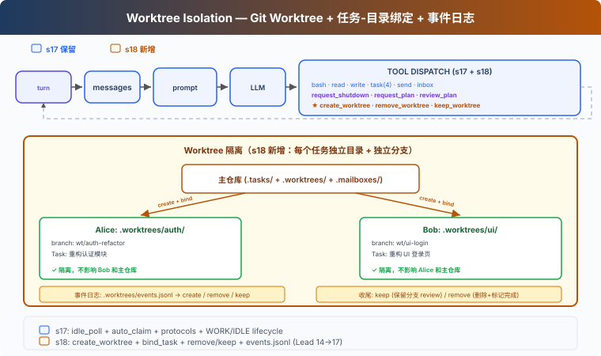
Git worktree
让你在同一仓库中创建多个独立的工作目录，每个有自己的分支。Alice 在
.worktrees/auth-refactor/ 下工作，Bob 在
.worktrees/ui-login/ 下工作——互不干扰。
沿用 S17 的教学版 MessageBus、协议和自治认领机制。本章新增：
| 能力 | 作用 |
|---|---|
| create_worktree | 为任务创建独立目录 + 独立分支 |
| bind_task_to_worktree | 把任务和工作目录绑定（不改状态） |
| remove_worktree / keep_worktree | 完成后清理或保留 |
| validate_worktree_name | 拒绝路径穿越和非法字符 |
工作原理
创建：任务-Worktree 绑定
代码
def create_worktree(name: str, task_id: str = "") -> str:
validate_worktree_name(name) # 只允许 [A-Za-z0-9._-]{1,64}
path = WORKTREES_DIR / name
ok, result = run_git(["worktree", "add", str(path), "-b", f"wt/{name}", "HEAD"])
if not ok:
return f"Git error: {result}"
if task_id:
bind_task_to_worktree(task_id, name)
log_event("create", name, task_id)
return f"Worktree '{name}' created at {path}"
def bind_task_to_worktree(task_id: str, worktree_name: str):
task = load_task(task_id)
task.worktree = worktree_name # 只写 worktree 字段
save_task(task) # 状态保持 pending，等队友 claim绑定规则：一个任务绑定一个 worktree。绑定不改任务状态——任务仍是
pending，队友自动认领时才推进到
in_progress。这样 Lead 可以提前创建任务和 worktree，队友
idle 时自然认领带 worktree 的任务。
队友工具的 cwd 切换
教学版给每个队友维护一个 wt_ctx 字典，记录当前 worktree
路径。队友认领带 worktree 的任务时，wt_ctx 自动设置为
worktree 路径；队友的
bash、read_file、write_file 在
worktree 目录下执行：
代码
# 队友线程内部
wt_ctx = {"path": None}
def _run_claim_task(task_id):
result = claim_task(task_id, owner=name)
if "Claimed" in result:
task = load_task(task_id)
if task.worktree:
wt_ctx["path"] = str(WORKTREES_DIR / task.worktree)
return result
def _run_bash(command):
return run_bash(command, cwd=wt_ctx["path"]) # 在 worktree 下执行这是教学简化。真实 CC 的 EnterWorktree 用
process.chdir() 切换整个进程目录，AgentTool isolation 用
cwdOverride 包住子 agent 执行。
收尾：Keep 还是 Remove
任务完成后，两个选择：
代码
def remove_worktree(name: str, discard_changes: bool = False) -> str:
# 安全检查：有改动时默认拒绝
if not discard_changes:
files, commits = _count_worktree_changes(path)
if files > 0 or commits > 0:
return "有未提交改动，使用 discard_changes=true 强制删除，或 keep_worktree 保留"
ok, _ = run_git(["worktree", "remove", str(path), "--force"])
if not ok:
return "删除失败"
run_git(["branch", "-D", f"wt/{name}"])
log_event("remove", name)
def keep_worktree(name: str) -> str:
log_event("keep", name)
return f"Worktree '{name}' kept for review (branch: wt/{name})"Keep = 留着分支，等人工 review 后合并到主分支。Remove =
有改动时默认拒绝，需要 discard_changes=true 确认。不自动
complete task——任务完成由队友的 complete_task
显式触发。
事件流：可审计
每次生命周期操作写入日志，方便排查：
代码
def log_event(event_type: str, worktree_name: str, task_id: str = ""):
event = {"type": event_type, "worktree": worktree_name,
"task_id": task_id, "ts": time.time()}
# append to .worktrees/events.jsonl事件类型：create（创建）、remove（删除）、keep（保留）。教学版只记录事件用于人工排查；完整恢复还需要
index 或 git worktree list 扫描。
run_git：返回成功/失败
代码
def run_git(args: list[str]) -> tuple[bool, str]:
r = subprocess.run(["git"] + args, cwd=WORKDIR, ...)
return r.returncode == 0, outputcreate_worktree 和 remove_worktree 只在 git
命令成功后才写事件日志，保证日志反映真实状态。
相对 17 的变更
| 组件 | 之前 (17) | 之后 (18) |
|---|---|---|
| 工作目录 | 所有 Agent 共享 WORKDIR | 每个任务可绑定独立 git worktree |
| Task 数据 | id/subject/status/owner/blockedBy | + worktree 字段 |
| 队友工具 cwd | 始终 WORKDIR | 认领带 worktree 的任务时自动切换 |
| 新函数 | — | create_worktree, bind_task_to_worktree, remove_worktree, keep_worktree, validate_worktree_name |
| worktree 安全 | 无 | name 校验 + 有改动时拒绝删除 |
| 事件日志 | 无 | events.jsonl 生命周期审计 |
| Lead 工具 | 14 (17) | + create_worktree, remove_worktree, keep_worktree (17) |
| 队友工具 | 8 (17) | 8（bash/read/write 在 worktree cwd 执行） |
接下来
Agent 团队能在隔离的工作空间中自组织了。但 Agent 的能力受限于我们给它写的工具——bash、read、write、task...
如果用户已经有了自己的工具怎么办？比如一个公司内部的 Jira API、一个自建的部署系统？
19 MCP Plugin → 给 Agent 装一个插件系统。外部工具通过标准协议接入，Agent 不需要知道它们是谁写的。
深入 CC 源码
CC 的 worktree 系统有两条路径：EnterWorktree（当前会话切入）和 AgentTool isolation（子 agent 隔离）。
EnterWorktree：当前会话切换
EnterWorktreeTool.ts:92-97 创建 worktree 后立即
process.chdir(worktreePath)、setCwd()、setOriginalCwd()、saveWorktreeState()。当前会话的工作目录直接切换到
worktree——不是 prompt 提醒，而是进程级目录变更。
ExitWorktreeTool.ts:261-320 的 keep/remove 都会
restoreSessionToOriginalCwd() 恢复原目录。Remove
时检查未提交改动（ExitWorktreeTool.ts:190-220），没有
discard_changes: true 就拒绝删除。
AgentTool isolation：子 agent 隔离
AgentTool.tsx:590-641 在
isolation: "worktree" 时调用
createAgentWorktree() 创建 worktree，用
cwdOverridePath 包住子 agent 执行。子 agent
的所有操作自动在 worktree
目录下进行。AgentTool/prompt.ts:272 告诉模型：这是临时
worktree，无改动自动清理，有改动返回路径和分支。
worktree.ts:902-951 的
createAgentWorktree() 不修改全局 session cwd，只给子 agent
用。worktree.ts:961-1020 的
removeAgentWorktree() 从主 repo root 删除。
name 校验
worktree.ts:76-84 校验 slug：拒绝
./..，允许
[a-zA-Z0-9._-]。worktree.ts:48 定义
VALID_WORKTREE_SLUG_SEGMENT。教学版的
validate_worktree_name 用同样的规则。
路径和分支命名
真实路径是 .claude/worktrees/，分支名
worktree-{slug}（worktree.ts:204-227，斜杠用
+ 替代）。教学版用 .worktrees/ 和
wt/{name} 简化。
创建时用
git worktree add -B（worktree.ts:326-328），优先基于
origin/<defaultBranch> 而非当前 HEAD。
状态管理
CC 没有 task-worktree 绑定。Worktree 状态通过
PersistedWorktreeSession（worktree.ts:756-768）管理，字段包括
originalCwd、worktreePath、worktreeName、worktreeBranch、originalBranch、originalHeadCommit、sessionId
等——没有
taskId。saveWorktreeState()（sessionStorage.ts:2883-2920）以
type: 'worktree-state' 写入 session transcript。
教学版用 task 的 worktree 字段做绑定，是教学简化。CC 把
worktree 和 task 作为两个独立系统，通过 Agent 理解上下文来关联。
19: MCP Tools — 外接工具，标准协议
"外接工具, 标准协议" — 发现、组装、调用，Agent 不需要知道工具是谁写的。
Harness 层: 插件 — 外部能力通过标准协议接入。
问题
01 到 18，Agent 的所有工具都是手写的——bash、read、write、task、worktree。每个工具的输入验证、执行逻辑、错误处理，都是你一行行写的。
现在你有 3 个外部服务想接入：公司的 Jira API（查 issue、建 ticket）、自建的部署系统（触发 deploy、看日志）、团队的 Notion 知识库（搜文档、建页面）。你不想为每个服务重写一套工具代码。
你需要一个标准协议——外部服务只要实现它，Agent 就能直接调用，不管服务用什么语言写的。
解决方案
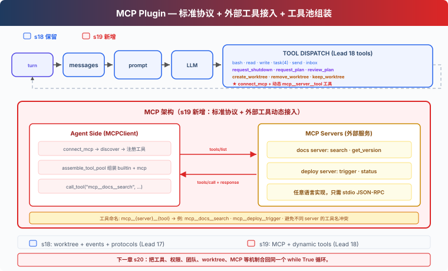
MCP（Model Context Protocol）定义了 Agent 如何发现和调用外部工具。核心概念：
| 概念 | 作用 |
|---|---|
| MCPClient | Agent 端的客户端，连接 server、发现工具、调用工具 |
| MCP Server | 外部服务，实现 tools/list +
tools/call |
| assemble_tool_pool | 把内置工具和 MCP 工具组装成一个工具池 |
| mcp__server__tool 命名 | 避免不同 server 的工具名冲突 |
沿用 18 的教学版 worktree
隔离、自主认领、空闲轮询、协议系统。本章新增：connect_mcp
工具——连接外部服务，发现工具，加入工具池。
教学版用 mock handler 模拟外部 server。真实版会启动子进程，通过 stdin/stdout 发送 JSON-RPC 请求。mock 的好处是不依赖外部服务就能跑完整流程；代价是你看不到真正的网络通信和进程管理。
工作原理
MCPClient：发现 + 调用
代码
class MCPClient:
def __init__(self, name: str):
self.name = name
self.tools: list[dict] = []
self._handlers: dict[str, callable] = {}
def register(self, tool_defs, handlers):
"""Simulates tools/list discovery."""
self.tools = tool_defs
self._handlers = handlers
def call_tool(self, tool_name: str, args: dict) -> str:
"""Simulates tools/call."""
handler = self._handlers.get(tool_name)
if not handler:
return f"MCP error: unknown tool '{tool_name}'"
return handler(**args)教学版用 Python 函数模拟 server 的工具实现。真实版通过 stdio JSON-RPC 与子进程通信。
connect_mcp：连接 + 发现
代码
def connect_mcp(name: str) -> str:
if name in mcp_clients:
return f"MCP server '{name}' already connected"
factory = MOCK_SERVERS.get(name)
if not factory:
return f"Unknown server '{name}'. Available: ..."
mcp_client = factory()
mcp_clients[name] = mcp_client
return f"Connected to '{name}'. Discovered: ..."连接后，server 提供的工具立即可用。
normalize_mcp_name：名称规范化
代码
_DISALLOWED_CHARS = re.compile(r'[^a-zA-Z0-9_-]')
def normalize_mcp_name(name: str) -> str:
return _DISALLOWED_CHARS.sub('_', name)所有非 [a-zA-Z0-9_-] 的字符替换为 _。防止
server 名或工具名中包含特殊字符导致命名冲突或注入问题。
assemble_tool_pool：组装工具池
代码
def assemble_tool_pool() -> tuple[list[dict], dict]:
tools = list(BUILTIN_TOOLS)
handlers = dict(BUILTIN_HANDLERS)
for server_name, mcp_client in mcp_clients.items():
safe_server = normalize_mcp_name(server_name)
for tool_def in mcp_client.tools:
safe_tool = normalize_mcp_name(tool_def["name"])
prefixed = f"mcp__{safe_server}__{safe_tool}"
tools.append(...)
handlers[prefixed] = (
lambda *, c=mcp_client, t=tool_def["name"], **kw:
c.call_tool(t, kw))
return tools, handlers前缀 mcp__{server}__{tool} 避免不同 server
的工具名冲突。名称经过 normalize_mcp_name 规范化。
MCP 工具的 description 带 (readOnly) 或
(destructive) 标注——教学版用文本标注，真实 CC 用 tool
annotations 结构体让权限系统判断。
无缓存：工具池变了，prompt 也变
10-18 的 agent_loop 用 prompt cache 避免重复序列化。19 去掉了缓存：
代码
def agent_loop(messages, context):
tools, handlers = assemble_tool_pool() # 每次重新构建
system = assemble_system_prompt(context) # 每次重新生成
...
if any(b.name == "connect_mcp" ...):
tools, handlers = assemble_tool_pool() # 连接后重建
system = assemble_system_prompt(context)原因：connect_mcp 之后工具池变化了——新增了
mcp__docs__search
等工具。缓存中的工具列表是旧的，继续用会导致模型调用不到新工具。教学版直接去掉缓存，代价是多花一点序列化时间。
MCP 工具只有 Lead 可用
教学版中，connect_mcp 是 Lead
工具，assemble_tool_pool 也只服务于 Lead 的
agent_loop。Teammate 仍使用固定的 8
个子集工具（bash、read_file、write_file、send_message、submit_plan、list_tasks、claim_task、complete_task）。
这是教学简化。真实 CC 中，MCP 工具对主 agent 和子 agent 都可用——子 agent 继承父级的 MCP 配置。
相对 18 的变更
| 组件 | 之前 (18) | 之后 (19) |
|---|---|---|
| 工具来源 | 全部手写 builtin | 手写 + MCP 外部工具动态发现 |
| 工具池 | 固定 BUILTIN_TOOLS | assemble_tool_pool 动态组装 mcp__ 前缀工具 |
| 名称安全 | 无 | normalize_mcp_name 规范化 |
| 新类型 | — | MCPClient 类（模拟 tools/list + tools/call） |
| 命名空间 | — | mcp__server__tool 避免冲突 |
| 工具描述 | 无标注 | (readOnly)/(destructive) 标注 |
| prompt 缓存 | 有（10 起） | 去掉——工具池动态变化后缓存失效 |
| Lead 工具 | 17 (18) | 18 (+connect_mcp) |
| Teammate 工具 | 8 (18) | 8（不变，MCP 工具仅 Lead 可用） |
| 扩展方式 | 写代码加工具 | 标准协议，任意语言实现 server |
接下来
现在 Agent 可以通过标准协议接入外部工具了。但前面 19 章每章都只加一个机制，真实 Agent 不会这样拆开运行。
工具、权限、hooks、todo、任务图、记忆、压缩、后台、cron、团队、worktree、MCP 这些机制应该挂在同一个循环上，而不是散在 19 个 demo 里。
20 Comprehensive Agent → 把前 19 章的机制合回一个完整 harness。机制很多，循环一个。
深入 CC 源码
以下基于 CC 源码
services/mcp/client.ts、auth.ts、config.ts、channelNotification.ts的分析。
一、6 种 Transport 类型
教学版只展示了 stdio mock。CC 支持 6
种传输（types.ts:23-25）：
| Transport | 通信方式 |
|---|---|
stdio |
子进程 stdin/stdout（跨平台默认） |
sse |
HTTP Server-Sent Events |
http |
Streamable HTTP（POST/SSE 双向） |
ws |
WebSocket |
sse-ide |
IDE 内嵌 SSE 传输 |
sdk |
进程内 SDK 传输 |
连接时本地（stdio）和远程（http/sse/ws）服务器分批并发：本地批量 3 个，远程批量 20 个。
二、工具池组装算法
assembleToolPool()（tools.ts:345-364）：
代码
// 去重时优先保留内置工具（name 相同时内置在前）
return uniqBy(
[...builtInTools.sort(byName), ...filteredMcpTools.sort(byName)],
'name',
)内置工具和 MCP 工具分开排序，不是合起来排。原因是 CC 的
claude_code_system_cache_policy
在最后一个内置工具之后的某个位置放全局缓存断点——混排会破坏这个设计。
三、命名规则：mcp__server__tool
buildMcpToolName()（mcpStringUtils.ts:50-52）：
代码
mcp__<normalizedServerName>__<normalizedToolName>所有非 [a-zA-Z0-9_-] 字符替换为
_（normalization.ts:17-23）。教学版的
normalize_mcp_name 用同样的规则。
四、权限检查
CC 对 MCP 工具有独立的权限系统。checkPermissions() 对
MCP 工具的检查逻辑不同于内置工具——MCP
工具可以声明自己的权限需求（readOnly、destructive 等），CC
根据声明决定是否需要用户确认。教学版只在 description 中用文本标注
(readOnly) / (destructive)，不做权限拦截。
五、配置来源与优先级
MCP 服务器配置来自多个来源。CC 的配置优先级从低到高：
代码
claude.ai 连接器 < plugin < user settings.json < approved project .mcp.json < local settings.local.jsonclaude.ai
连接器单独拉取、按内容签名去重，以最低优先级合并（config.ts:1267-1289）。企业
managed-mcp.json 存在时完全排除其他配置。
教学版直接传 server name 给 MOCK_SERVERS
字典，不做配置合并。
六、Channel 通知：服务器反向推消息
教学版只讲了 Agent → MCP Server 的单向调用。CC
还支持反向通知（channelNotification.ts）：
- Server 声明
capabilities.experimental['claude/channel'] - Server 通过 MCP 通知
notifications/claude/channel给 Agent 发消息 - 消息包装在
<channel source="serverName">...</channel>XML 标签中 - Agent 被 SleepTool 唤醒（1 秒内）
Server
还可以请求权限：notifications/claude/channel/permission_request
→ Agent 回复
notifications/claude/channel/permission。用户通过 5 字母短
ID 确认/拒绝。
七、OAuth 认证流程
CC 的 MCP 认证（auth.ts）支持完整的 OAuth 2.0 + PKCE
流程：
- 通过公钥客户端 + PKCE 发现 OAuth 元数据（RFC 8414 / RFC 9728）
- 本地回调服务器接收授权码
- 令牌通过
getSecureStorage()持久化（macOS Keychain / Linux 加密文件 / Windows 凭据管理器） - 过期前 5 分钟自动刷新
- 支持跨应用访问（XAA）：浏览器获取 id_token → RFC 8693 + RFC 7523 交换 → 无需反复弹浏览器
八、连接生命周期的错误处理
CC 对 MCP
连接有精细的错误分类和重试（client.ts:1266-1402）：
- 终局性错误（ECONNRESET、ETIMEDOUT、EPIPE 等）：连续 3 次 → 关闭 + 重连
- 工具调用 401：令牌过期 → 抛出
McpAuthError→ 触发重认证 - 工具调用超时：
Promise.race超时（可配置，默认约 28 小时） - Stdio 断连：按 SIGINT → SIGTERM → SIGKILL 顺序杀进程
教学版的简化
- 6 种 transport → 1 种（mock stdio）：概念量可控
- Channel 反向通知 → 省略：教学版 Agent 是主动方
- OAuth 流程 → 省略：教学版假设 server 不需要认证
- 多层配置优先级 → 省略：教学版直接传 server name
- 复杂的错误分类 → 省略：教学版用 try/except 兜底
- MCP 工具只给 Lead → 省略子 agent 继承：简化代码结构
20: Comprehensive Agent — 全部机制，归到一个循环
"机制很多，循环一个" — 工具、权限、记忆、任务、团队、插件都挂在同一个 while True 上。
Harness 层: 综合 — 把前 19 章的机制放回同一个可运行系统。
问题
前 19 章每章只加一个机制。这样适合学习，但真实 Agent 不会只带一个机制运行。
一个能长期工作的 coding agent 需要同时拥有：
- 工具分发和权限边界
- hooks 扩展点
- todo 计划和任务图
- 技能、记忆、系统 prompt 组装
- 压缩和错误恢复
- 后台任务和 cron 调度
- 团队、协议、自治认领
- worktree 隔离
- MCP 外部工具接入
难点不是把功能堆起来，而是看清楚它们都挂在循环的哪个位置。S20 就是终点章：把所有组件归位。
解决方案
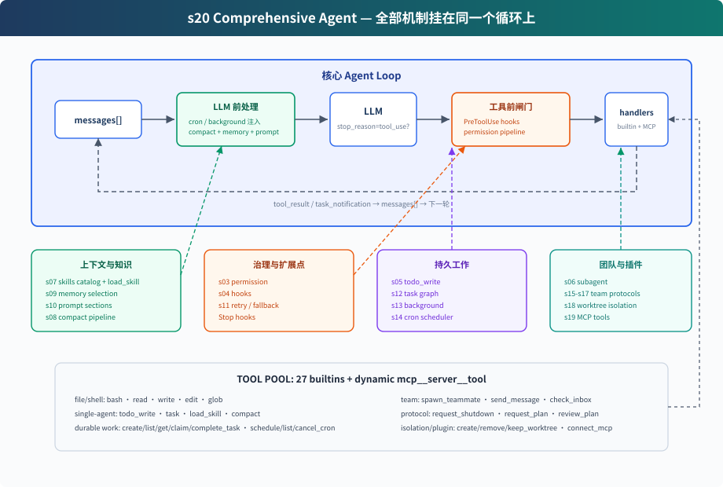
S20 不是再发明一个新机制，而是把前面的教学组件合成一个完整 harness：
代码
用户输入
→ UserPromptSubmit hooks
→ cron/background 通知注入
→ context compact
→ memory + skills + MCP 状态组装 system prompt
→ LLM
→ has tool_use block?
否 → Stop hooks → 返回
是 → PreToolUse hooks + permission
→ TOOL_HANDLERS / MCP handlers / background dispatch
→ PostToolUse hooks
→ tool_result / task_notification 回 messages
→ 下一轮循环本身仍然是同一个结构：调用模型，检查响应里是否出现
tool_use block，执行工具，把结果追加回
messages。CC 源码里也不直接信任
stop_reason == "tool_use"，而是以实际出现的 tool_use block
作为是否继续工具轮的信号。变化的是循环周围的 harness 变完整了。
组件在循环中的位置
| 位置 | 组件 | 作用 |
|---|---|---|
| 用户输入前后 | UserPromptSubmit hooks |
记录、注入、审计用户输入 |
| LLM 前 | cron queue | 把定时触发的 prompt 注入 messages |
| LLM 前 | background notifications | 后台任务完成后以 <task_notification> 注入 |
| LLM 前 | compaction pipeline | 先压大输出，再裁历史，再压旧 tool_result，必要时摘要 |
| LLM 前 | memory / skills / MCP state | 组装 system prompt，让模型看到当前能力和长期上下文 |
| LLM 调用 | error recovery | 429/529 重试，max_tokens 升级，prompt too long 触发
reactive compact |
| 工具执行前 | PreToolUse hooks + permission |
拦截危险命令、写越界、破坏性 MCP 工具 |
| 工具分发 | assemble_tool_pool |
组装内置工具和 MCP 动态工具 |
| 工具执行时 | background dispatch | 慢 bash 操作放 daemon thread，主循环先返回占位结果 |
| 工具执行后 | PostToolUse hooks |
大输出告警、日志等后处理 |
| 返回循环 | tool_result | 每个 tool_use 对应一个
tool_result，再回到下一轮 |
| 本轮没有 tool_use / 停止时 | Stop hooks |
统计、清理、审计 |
code.py 包含什么
工具与分发
内置工具池包含 27 个工具：
代码
bash, read_file, write_file, edit_file, glob
todo_write, task, load_skill, compact
create_task, list_tasks, get_task, claim_task, complete_task
schedule_cron, list_crons, cancel_cron
spawn_teammate, send_message, check_inbox
request_shutdown, request_plan, review_plan
create_worktree, remove_worktree, keep_worktree
connect_mcpassemble_tool_pool() 每轮组装：
代码
BUILTIN_TOOLS + connected MCP tools
BUILTIN_HANDLERS + mcp__server__tool handlers所以 connect_mcp("docs") 后，下一轮工具池里会出现
mcp__docs__search。
权限和 hooks
权限不写死在工具执行行里，而是作为 PreToolUse hook：
代码
blocked = trigger_hooks("PreToolUse", block)
if blocked:
results.append(tool_result(block.id, blocked))
continue这样 permission、log、审计都可以挂在同一个 hook 点上。执行后再触发
PostToolUse。
计划与任务
S20 同时保留两层计划：
todo_write：当前会话内的轻量计划，保存在内存中- task graph：跨会话、可依赖、可认领的任务文件，写入
.tasks/task_*.json
前者帮助单个 Agent 不漂移；后者支撑团队协作。
子 agent 与团队
S20 有两种 delegation：
task：一次性 subagent。独立messages[]，中间过程丢弃，只返回最终摘要。spawn_teammate：持久队友线程。通过 MessageBus 收发消息，能 idle 轮询任务板并自动认领。
一次性 subagent 解决“上下文隔离”；持久队友解决“长期并行协作”。
记忆、技能和 prompt
assemble_system_prompt(context) 每轮组装：
- 身份和工具说明
- workspace
- skills catalog
.memory/MEMORY.md- 已连接 MCP server
技能只在 system prompt 里放目录。完整内容通过
load_skill(name) 按需加载。
压缩和恢复
LLM 前先跑压缩管线：
代码
tool_result_budget → snip_compact → micro_compact → compact_history调用模型时再包一层恢复：
- 429：指数退避重试
- 529：指数退避，连续失败可切 fallback model
max_tokens：先提高 max_tokens，再要求 continuation- prompt too long：reactive compact 后重试
后台和 cron
慢 bash 操作不会阻塞主循环：
代码
should_run_background → start_background_task → placeholder tool_result
后台完成 → task_notification → 下一轮注入 messagescron 调度器独立 daemon thread 每秒检查一次。CLI 会监听
cron_queue，命中后主动把 [Scheduled] ...
注入并运行一轮 Agent。
worktree 与 MCP
worktree 负责隔离目录：
create_worktree(name, task_id)创建独立分支和目录- task 的
worktree字段绑定目录 - 队友 claim 到带 worktree 的 task 后，bash/read/write 自动在对应目录下执行
MCP 负责外部能力：
connect_mcp(name)连接 mock serverassemble_tool_pool()把 MCP 工具组装进工具池- 工具名统一为
mcp__server__tool
相对 19 的变化
| 组件 | 19 | 20 |
|---|---|---|
| 工具池 | 内置 + MCP | 内置 + MCP，补齐 01-18 的工具 |
| 权限 | 教学主体省略 | PreToolUse hook 中执行 |
| hooks | 省略 | UserPromptSubmit / PreToolUse / PostToolUse / Stop |
| todo | 省略 | todo_write + reminder |
| skill | 省略 | catalog in system prompt + load_skill |
| compact | 省略 | LLM 前压缩 + compact 工具 + reactive compact |
| error recovery | 简化 try/except | retry / max_tokens / prompt too long |
| background | 省略 | 慢操作后台线程 + task notification |
| cron | 省略 | daemon scheduler + durable jobs |
| multi-agent | 保留 | 保留；队友使用隔离目录下的基础工具 |
| worktree | 保留 | 保留 |
| MCP | 新增 | 保留，作为最终工具池的一部分 |
结束亦是开始
从 01 到 20，代码表面越来越复杂，但核心始终没变：
代码
while True:
response = LLM(messages, tools)
if not has_tool_use(response.content):
return
results = execute_tools(response.content)
messages.append(tool_results)Claude Code 的复杂性不是“另一个 agent 大脑”，而是一个成熟 harness 的复杂性。模型负责判断和行动选择；harness 负责把环境、工具、权限、记忆、团队和外部能力组织好。
这就是全书的终点：机制很多，循环一个。